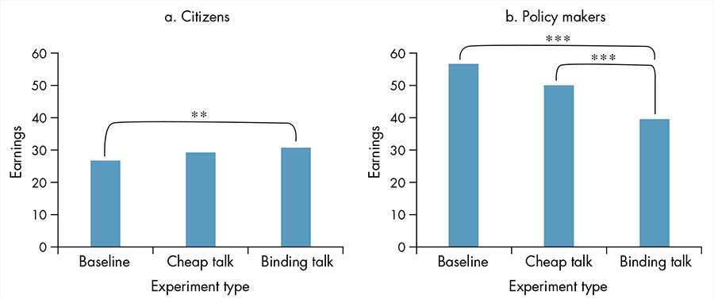

CHAPTER 2
Enhancing governance for development: Why policies fail
Amka and the Three Golden Rules (2014) is a beautifully crafted film about a Mongolian child, Amka, whose life turns into a nightmare after he finds a golden coin and hops onto a path of overspending, abandoning family duties and taking on unmanageable levels of indebtedness. Under pressure to repay his debts, he runs away, through the astounding Mongolian landscape, to settle with an eccentric uncle who teaches him the three golden rules of life.
The Mongolian newspaper UB Post noted in 2014 that “the story is in many ways a symbol of how Mongolia must decide its own fate” to manage its growing levels of debt.1 Indeed, as the movie was being released, the country was undergoing a third attempt to establish the rainy-day Future Heritage Fund to manage its windfall from mining revenues (mining is the country’s largest source of revenue). The attempt to transplant the design of a “future generations fund” from international best practices had already failed twice.
Experts from around the world had visited Mongolia over the previous decade, providing advice on the best existing rules for the distribution and management of revenues from natural resources. Technical solutions were available, and political will was palpable among several state actors. Yet, since 2007, attempts to establish rules for the use of mining revenues had been thwarted by political pressures. Hard-fought parliamentary elections prompted Mongolia’s political parties to promise to increase spending on programs such as cash allowances, untargeted social benefits, and investments in specific regions in order to garner support. However, such promises could be fulfilled only by depleting the resources going into the reserve fund (Chimeddorj 2015). Thus no matter how well policy makers designed the future generations fund, unless the interests of the powerful groups in society were to change, the commitment to a policy of fiscal prudence would continue to fail and the country would remain in debt. The process to reach and sustain agreements among decision makers on these policies had not created the conditions for people to be willing to cooperate and coordinate actions around specific long-term goals.
The parallels between Mongolia’s state of affairs and the story portrayed in the movie were not a coincidence. The metaphor in Amka’s tale was a deliberate attempt, supported by opinion leaders and artists, to create awareness in Mongolian society about the importance of prudence in the management of resources (in Amka’s story, the golden coin). The movie was viewed as an instrument to reinforce people’s values of prudential management of wealth in an effort to coordinate support for the pursuit of the long-term goal of fiscal sustainability in Mongolia.
As this example illustrates, policy making does not take place in a vacuum. It is the result of a bargaining process among actors, who frequently have diverse and even opposing preferences and interests. More important, the bargaining power of those actors differs, derived from a variety of sources such as the existing formal rules, informal norms, their ability to represent and mobilize other groups in society, or their control over resources. The complex process in which actors bargain over the design and implementation of policies, in a very specific social, historical, and economic context, is what in this Report is called governance.
Policy making does not take place in a vacuum. It is the result of a bargaining process among actors, who frequently have diverse and even opposing preferences and interests.
Diverse pathways to success: Moving beyond institutional transplants
For decades, academics as well as practitioners have acknowledged the importance of institutions—organizations and rules—to development. Countries that are more secure, prosperous, and equitable tend to rank higher on the existing indicators that emphasize certain institutional forms. This pattern has created a perception that certain types of institutions unambiguously determine higher levels of development, and it has led many well-intentioned policy makers and development agencies to promote institutional reforms that aim at achieving those institutional standards—often referred to as institutional transplants. In other words, in acknowledging that governance matters for development, one implicitly accepts the fact that the effects of governance are determined by the characteristics of formal institutions.
However, institutional forms are not enough. Consider the challenge that Mongolia faced in following its own “golden rules.” The Mongolian government decided to adopt international best practices to manage fiscal revenues from natural resource extraction, but it failed to administer them with a long-term perspective. Although the countercyclical management of fiscal policy to manage volatility has been viewed as a key role of institutions seeking to promote long-term development, the form that those institutions took in Mongolia was not enough to affect outcomes (Gill and others 2014). Political constraints, pressures from interest groups, existing social opinions about the need to accelerate progress in specific areas, and historical inertia had eroded the credibility of the commitment to prudential management of mining resources.
Contrast Mongolia with those countries viewed as examples of effective management of natural resources such as Chile and the Netherlands. Chile and Mongolia have the same institutional forms for the allocation of revenues from the extractive industry—Mongolia followed the Chilean example—but very different outcomes. Fiscal spending in Mongolia is considerably more procyclical in spite of having the same rules (see figure 2.1, panel a). Meanwhile, Chile and the Netherlands have very different institutional forms, but they are similarly effective in managing resources (for Chile, see panel b). What do the Chilean and Netherlandic cases have in common? Many factors determine effectiveness, but certainly the fact that actors are willing to accept and follow the rules, or act collectively, is one of them. In Chile, political agreements since the return to democracy in the 1990s have included a long-term perspective on economic management, a principle accepted by all actors in the political spectrum. In the Netherlands, the basic principles of fiscal management have been broadly accepted within the Netherlandic political culture for years, reinforced by the experience of living through a period of mismanagement and the so-called Dutch disease in the second half of the 20th century.2
Figure 2.1 Despite similar rules for the management of natural resource revenue in Chile and Mongolia, Chile’s expenditure patterns reveal a stronger commitment to compliance
Sources: Mongolia: Mongolia Statistical Information Services, monthly data, 2005–15; Chile: World Bank, World Development Indicators (database), 1960–2014.
Often, when policies and technical solutions fail to achieve the intended outcomes, blame falls on institutional failure, and the proposed solution is to “improve” institutions. But development can occur under a wide variety of institutional trajectories, as examples around the world and throughout history demonstrate. Thus it then becomes essential to uncover the underlying drivers of policy effectiveness. What makes some policies work while others fail? In addition to the type of institutions that matter, it is relevant to ask what those institutional forms are trying to achieve, or what functions they are meant to perform.
Drivers of effectiveness: Commitment, coordination, and cooperation
This Report identifies commitment, coordination, and cooperation as the three core functions of institutions that are needed to ensure that rules and resources yield the desired development outcomes. Policy effectiveness can be explained by whether and how well institutions are performing these functions. Commitment is about supporting consistent policies over time to ensure that promises are delivered. Coordination is about shaping expectations to enable complementary action. And cooperation is about limiting opportunistic behavior to prevent free-riding. Coordination and cooperation imply voluntary compliance—that is, the preferred social action is the one that individuals are actually willing to take. Box 2.1 discusses the ways in which commitment, coordination, and cooperation can be understood from the perspective of game theory. Although policy makers may not think in terms of game theory, they play these games every day, and the models lend precision and objectivity to understanding their actions.
Box 2.1 The microfoundations of commitment, coordination, and cooperation: A perspective from game theory
The framework of this World Development Report (WDR) highlights commitment, coordination, and cooperation as the key institutional functions that shape the effectiveness of policies for development. Those terms come from game theory and are better explained using its language.a Table B2.1.1 presents an example.
Table B2.1.1 Coordination and cooperation as modeled in game theory

The table can be read in the following way. The top left gray cell symbolizes the net benefits (payoffs) for actors when both of them decide to take action A such as mobilize, pass a law, or monitor a provider. The first number (2) is the payoff of actor 1 when that actor decides to take action A and actor 2 does the same. The second number (2) is actor 2’s payoff when that actor decides to take action A when actor 1 does as well. In the top right gray cell, the first number (0) is actor 1’s payoff when that actor decides to take action A, but actor 2 decides against it. The second number (x) is actor 2’s payoff when that actor decides not to take action A, but actor 1 decides to take it. The actors’ payoff values can be read in the other scenarios in the same way. According to the matrix of payoffs, the value of x will determine whether the game is a coordination or a cooperation one. Both are collective action problems.
Coordination
If x < 2, the actors are engaged in a coordination game. In this game, the actors’ incentives are aligned, but their actions depend on their expectations about what the other will do. Both of them prefer to take the same action; both outcomes—(A, A) and (NA, NA)—are equilibria of this game. The problem is how to achieve the equilibrium that is efficient and yields the highest payoff (A, A) because each actor is unsure about what the other one will do. In game theory, this game is known as the assurance game, where it is in each actor’s own interest to take a particular action (Y) if there is assurance that everyone else is also taking action Y. To achieve coordination, policies need to create common knowledge that everyone will take the desirable action. Sometimes, this requires providing incentives for some actors to take the desirable action first so others will follow.
Cooperation
If x > 2, the actors are engaged in a cooperation game. In this game, actors’ incentives are not aligned. In equilibrium, both of them do not take action A—(NA, NA)—which is the worst outcome from the point of view of maximizing the group payoff. In game theory, this is referred to as a prisoner’s dilemma game, where the collective gain would be greater if the actors could cooperate, but each actor individually has a greater incentive to free-ride (take action NA). To induce cooperation, policies would have to put forth a credible mechanism of reward or penalty conditioned on players’ actions in order to prompt actions yielding the jointly preferred outcome.
Commitment
Commitment refers to the ability of actors to enforce agreements. For example, if the actors were allowed to communicate with one another, they would have incentives to promise to take the action that maximizes the group’s payoff. However, because there are no mechanisms to enforce those agreements (commitment devices), it is still in the interest of the actors to renege on their promises. Commitment devices allow actors to transform the game so that their incentives are aligned.
Source: WDR 2017 team.
a. Example adapted from Weber (2008) and reprinted in Bartolini (2013).
Commitment: Backing consistent policies over time to ensure promises are delivered
Policies are not spot transactions such as buying a book or using a taxi; they require consistency over time. However, reaching and sustaining agreements can be difficult because economic and political conditions may change, and the incentives for policy makers to deviate from established goal-oriented policies can be strong. To promote sustained development, it is particularly important to ensure that those in power can credibly deliver on promises made to citizens beyond the political cycle. Imagine that a worker would like to save for retirement by contributing funds to a pension. If that worker does not believe the government can credibly commit to not expropriating those funds and returning them in the future, he or she will likely choose not to save. In line with the economic theory of incomplete contracts, policies must include commitment devices to ensure their credibility. Commitment devices help ensure the credibility of policies over time, even in the face of changing circumstances. In this sense, institutions can be thought of as technologies that allow society and individuals to engage in the pursuit of long-term goals, even in the face of changing circumstances.
In all countries, but mainly in low-income or fragile contexts, commitment is a fundamental condition to prevent the escalation of conflict to violence. Whether conflicting parties are able to reach credible agreements to renounce violence and endow the state with a monopoly on the legitimate use of violence is a crucial condition to prevent escalation (see chapter 4). When commitment to deals is not credible, contending sides tend to walk away from the bargaining table and violence prevails: warring factions may renege on peace agreements, policy makers may default on promises to transfer resources to discontented groups or regions, disputants may fail to abide by court judgments, or police officers may abuse citizens instead of protecting them. The influence of commitment is not exclusive to security. Economic growth requires an environment in which firms and individuals feel secure in investing their resources in productive activities. Credible commitment to pro-growth policies and property rights is, in this way, also essential to ensure macroeconomic stability and to enable growth.
People’s perception of the credibility of com-mitments can also increase their willingness to cooperate—say, through tax compliance—and to coordinate, following rules in response to the belief that others will follow as well. Theoretically, delivering on commitments builds trust in institutions over time and strengthens voluntary compliance (box 2.2). Empirical results from lab experiments carried out for this Report are consistent with this notion, whereby binding commitments lead to greater cooperation and more redistribution of resources among players (Banuri and others 2016)—see box 2.2.
Box 2.2 Trust in institutions stems from delivering on commitments
Trust is a central aspect of strengthening governance and delivering on development. Trust is related to positive outcomes in terms of economic growth,a as well as government performance (Putnam 1993; La Porta and others 1997). But what exactly is trust, where does it come from, and why does it matter? This Report defines trust as the probability that an actor assigns to other actors of delivering on their commitment, conditional on their past behavior. In the game theory literature, this is known as reputation. The literature distinguishes between two key kinds of trust: interpersonal trust and institutional trust.
Interpersonal trust refers to trust among individuals. It can arise from their relationships such as shared ties, or it can be present as a social norm (table B2.2.1). The notions of bonding social capital and bridging social capital are relevant to interpersonal trust (Putnam 2000). Bonding social capital—the horizontal ties within communities and among organizations—can bring about a sense of purpose and identity, encouraging social cohesion. Bridging social capital consists of the cross-cutting ties that breach social divides, such as economic class, ethnicity, and religion. If the bridging of social capital is missing, it can lead to balkanized societies in which strong ties within communities actually work against the collective interest, holding back development (Portes and Landolt 1996).
Institutional trust refers to society’s trust in organizations, rules, and the mechanisms to enforce them. Institutional trust can arise from elements based on relationships, or it can be a function of repeated commitment (table B2.2.1). This Report focuses on institutional trust, built by repeatedly delivering on commitments, such as by enforcing contracts or not defaulting on pledges and obligations. This type of trust is important because it strengthens the capacity to commit (outcome legitimacy), and ultimately it enables cooperation and coordination by inducing voluntary compliance (box 2.9).
Table B2.2.1 Sources of trust
|
Type of trust |
|
Institutional trust |
Interpersonal trust |
Source of trust |
Relationships |
Relationships |
Commitment |
Norms |
Source: WDR 2017 team, based on Lach and López-Calva 2016.
The importance of trust for enabling collective action can be illustrated in the context of game theory. In the traditional prisoner’s dilemma game, even though it would be in the best interest of both prisoners to cooperate—refusing to confess—the inability to trust that the other party will indeed cooperate means that the outcome for purely rational prisoners is to defect, betraying each other (in a one-off game). Game theory predicts that cooperation comes into play in repeated games. Axelrod (1984) finds that the most successful strategies in the basic prisoner’s dilemma game are related to mutual trust, engendered from paying support with support and defection with defection. This finding is supported by a lab game played for this Report (figure B2.2.1).
Figure B2.2.1 Welfare is higher for citizens under commitment in the lab game

Source: Banuri and others 2016.
Note: In preparation for the World Development Report 2017, a series of lab experiments was carried out to explore the behavioral responses of agents in terms of cooperation and redistribution under different protocols. In the basic lab game are three citizens and one policy maker. The citizens provide resources for a group account, which the policy maker is in charge of distributing. The policy maker observes the total amount in the group account and can then distribute the resources in any manner he or she sees fit. The game is repeated over 20 periods. In the “cheap talk” treatment, the policy maker makes public the intended distribution rule prior to citizens’ contributions, but the rule is not binding and can be modified after citizens make their contributions. In the “binding talk” treatment, the policy maker again makes public the distribution rule prior to citizens’ contributions, but in this case the policy maker cannot amend the rule after citizens make their contributions. In this second case, there is a credible commitment because the public announcement is binding.
Significance levels: ** = significantly higher earnings of citizens in binding talk compared with baseline (p < .05), but not compared with cheap talk (and cheap talk is not different from the baseline). *** = significantly lower earnings of policy makers in binding talk (p < .01) relative to both the baseline and cheap talk (p < .01). Cheap talk is not significantly different from the baseline (p = .133).
Source: WDR 2017 team.
a. Knack and Keefer (1997); Whiteley (2000); Zak and Knack (2001).
Coordination: Shaping expectations to enable complementary action
What makes people choose to coordinate to reach socially preferred outcomes? The answer to this question is at the heart of understanding development progress. As Douglass North contends, “The disparity in the performance of economies and the persistence of disparate economies through time have not been satisfactorily explained by development economists. … What has been missing is an understanding of the nature of human coordination and cooperation” (North 1990a, 11). By shaping beliefs3 and coordinating expectations, institutions can push societies on favorable paths toward better development outcomes. When actors are uncertain about what others will do, they may not make decisions that could induce socially preferred outcomes. By contrast, in the presence of strategic complementarities, coordinated actions can lead to better outcomes for all. Since the classic work on the problems of industrialization in Eastern Europe by Rosenstein-Rodan (1943) and the idea of the “big push” formalized by Murphy, Shleifer, and Vishny (1989), coordination has been viewed as a central issue in both the economic and noneconomic realms.
Particularly in middle-income countries, coordination is required to induce investment and innovation. Both depend on firms and individuals believing that others will also invest. Institutions can help solve market failures by coordinating investment decisions and the expectations of market participants. Indeed, the insight that a failure to coordinate investment activity can lead to underdevelopment is decades old.4 Consider the case in which large-scale factories are more efficient, but investing in them is not profitable for individual firms unless carried out as a group. Perhaps the market size is too small to justify large-scale investments, unless all industries expand together, providing markets for one another. In such a situation, there are two possible outcomes, or equilibria. The first is one in which no firms invest in large-scale factories, and efficiency levels stay low. The second, better outcome is one in which firms are able to coordinate a simultaneous move to large-scale, efficient production.
Such problems of coordination can occur in many contexts, ranging from finance and adoption of technology to innovation and industrial clusters.5 Consider a country that wants to invest in green technologies such as electric cars to improve the environmental sustainability of its growth process. Such an initiative would require the complementary investment of car manufacturers, battery producers, electricity providers, and city planners. If each actor is unsure of the willingness of the others to invest, the electric cars may never be produced. However, if institutions are able to reduce that uncertainty by creating common knowledge that other firms will also invest, or by providing incentives to first movers, they can help coordinate investment across firms and push the adoption of greener technologies (World Bank 2012). Infant industry protection and other industrial policies are ways—not always effective—in which governments have provided these types of incentives to avoid being trapped in a situation in which everyone waits for others to invest first.6 The kinds of instruments policy makers have to coordinate expectations and lead societies to socially preferred outcomes will very much depend on the kinds of complementarities involved.
Cooperation: Limiting opportunistic behavior to prevent free-riding
Another basic type of collective action problem that institutions solve is cooperation, or reducing opportunistic behavior. By limiting free-riding, institutions can help build more cohesive societies and turn zero-sum games with no winners into positive-sum games in which all parties gain (win-wins)—see Ostrom (1990). Cooperation problems are often observed in the provision of public goods (such as collecting taxes to fund public schools or hospitals) or solving environmental concerns related to the overuse of a common resource pool (such as overexploitation of natural resources). Perhaps the most well-known example of a cooperation problem is the tragedy of the commons (Hardin 1968). In this example, all herdsmen can graze their animals in open grassland—the “commons”—without restrictions. As more and more cattle graze in the grassland, the grass increasingly fails to grow back fast enough, ultimately depleting it until it is of no use to anyone. The notion is that rational individuals acting independently, according to their own self- interest, will deplete a shared resource, even if it is contrary to the best interest of the group. This type of problem is common in situations in which agents immediately benefit from their actions and do not experience the losses from the impacts of their actions until later. A key notion behind cooperation problems, which differentiates them from coordination problems, is that the preferable action from a social point of view is not necessarily an equilibrium. In coordination problems, multiple equilibria exist, and policy is a matter of helping make the jump to the optimal one. Solving cooperation problems, by contrast, typically requires credible rewards or penalties to prompt actions that lead to the jointly preferred outcome.
In all countries, but particularly those that have achieved higher levels of prosperity, the degree to which prosperity is shared requires cooperation, particularly citizens’ willingness to contribute to public goods and not free-ride on others. The extent to which societies can ensure opportunities for all individuals relies on their ability to provide high-quality services, such as health, education, or connectivity, and to ensure access to economic opportunities, especially access to markets that allow individuals to use the assets acquired. Collecting the taxes needed to fund investments in public goods depends on individuals’ willingness to cooperate. Lack of cooperation is a typical cause of segregated outcomes: for example, differential treatment of different ethnic groups. One group may not be willing to contribute to the provision of public goods if a different group will benefit. Willingness will emerge, however, if the commitment to the provision of public goods is credible—regardless of which group is in control of the resources. Such a credible commitment can be achieved by, for example, constraining the power of those to whom authority is delegated or sharing power in decision-making bodies.
Sometimes, societies face a breakdown of cooperation, and people opt out or exit, failing to comply with the rules or to contribute to the provision of public goods (Hirschman 1970). Cooperation becomes more difficult to achieve as the number of people involved increases if there is less information on and greater uncertainty about others and when the interaction is finite. Inequality may also matter for sustaining cooperation. In theory, the relationship between wealth inequality and the successful provision of a common resource pool can be ambiguous. Consider a society in which there is high wealth inequality. On the one hand, a few dominant members of that society may reap enough benefits from having a public good that they have incentives to provide and maintain it independently, even if other less wealthy individuals free-ride on it (Olson 1965). On the other hand, some individuals with better outside options (often the rich) may not want to contribute to the provision of the public good. Thus there may be higher costs for enforcing cooperation, thereby nurturing distrust that the other(s) will pay and undermining cooperative behavior.7 For example, Brazil, where citizens organized to demand higher-quality public services, faced a problem common to many other countries: the fragmentation of the social contract. In these cases, the upper-middle class responds to the low quality of service provision by demanding private services, which in turn weakens its willingness to cooperate fiscally and contribute to the provision of public goods—a perverse cycle (Ferreira and others 2013).
Although commitment, coordination, and cooperation make up core institutional functions that contribute to the effectiveness of policies to achieve development outcomes, these functions are fulfilled effectively under only certain conditions.
Policy effectiveness in the presence of power asymmetries
As just described, in this Report effective policies are those that perform three key functions to improve development: enabling credible commitment, inducing coordination, and enhancing cooperation. But why are policies so often ineffective at doing so? The failure of policies that are good on paper to perform their intended function and the persistence of bad ones are often not the result of policy makers’ lack of resources, will, or knowledge. Consider a society run by a bene-volent social planner who cares about security, growth, and equity. The planner will choose policies that maximize these three objectives. However, as soon as that society deviates—as they do in real life—from the ideals of this monolithic planner, failures to commit, coordinate, and cooperate might take it far from the social optimum. Where such a society will end up will depend on the depth of these failures.
One of the key—though not the sole—contributing factors to determining policies and the resulting equilibria is the unequal distribution of power in society. This Report refers to such a distribution as a power asymmetry. Because policy effectiveness depends not only on what policies are chosen but also on how they are chosen and implemented, the relative degree of bargaining power of different actors may condition the kind of commitment, coordination, and cooperation that results (box 2.3).
Box 2.3 Game theory and the roots of political power
It has long been recognized that power is an important determinant of how a society functions and how the gains of economic activity are shared within and across nations. The early writings on power were imprecise as social scientists grappled for ways to express these embryonic ideas (Dahl 1957). But such imprecision began to wane with the rise of game theory. Social scientists are now able to formalize some of these difficult concepts and, in particular, the idea that, in the end, power depends on the beliefs and mores of ordinary people. Václav Havel expressed this notion beautifully in a paper smuggled out of the prison where he was locked up for dissenting against Czechoslovakia’s post-totalitarian state in the early 1980s. He argued that, in modern dictatorships, it is not always easy to separate the perpetrators from the victims. In his aptly titled essay “The Power of the Powerless” he argued that many of the oppressed are complicit in propping up the power of such regimes (Havel 1991).
This idea can be formally expressed with game theory. Consider a society with one dictator, D, and two citizens, 1 and 2. These two citizens are expected to provide some beck-and-call service and display their loyalty to D. Expressing this loyalty costs each citizen 5. The loyalty of both to D is what gives D power.
But why will people show loyalty to a dictator when it comes at a high cost? The answer lies in the nature of interaction among the citizens themselves. This can be captured by assuming that citizens can be cooperative (C) or noncooperative (N). The payoffs from such behavior are described in table B2.3.1.
Table B2.3.1 Payoffs to cooperation or noncooperation
|
N |
C |
N |
10, 10
(N, N) |
5, 0
(N, C) |
C |
0, 5
(C, N) |
20, 20
(C, C) |
Source: Kaushik Basu.
Note: C = cooperation; N = noncooperation.
Source: Prepared by Kaushik Basu for WDR 2017.
This game, labeled the assurance game by Sen (1967), is often also called the coordination game (see box 2.1). Keep in mind that the assurance game has two equilibria—both players choosing C and both players choosing N.
In the full game, each citizen first decides whether to display loyalty to the dictator before interacting among themselves. Suppose it is a common belief that if citizens are not loyal to the dictator, others will not cooperate with them. It is now entirely possible to become locked into a societal equilibrium in which everybody displays loyalty to the dictator and plays cooperatively among themselves. Their net return or payoff is 15—that is, 20 from the assurance game and –5 from loyalty (or obsequiousness) to the dictator, which props up the dictator’s power.
All citizens would prefer not to be loyal to D, but they fear that, if they dissent, others will not cooperate with them. It is this “triadic interaction” that props up power (Basu 2000). The behavior just described is a Nash equilibrium—but it is actually more than that. It is what in game theory is called a “subgame perfect equilibrium,” which is a Nash equilibrium supported by credible threats. Dictators may not know what a subgame perfect equilibrium is, but they do know how to create an atmosphere of mutual fear that props up the regime.
This example illustrates how power can be modeled without bringing any extraneous assumptions into the analysis. A pure economic analysis can lead to manifestations of power through the interplay of beliefs. But if one goes a step further and brings behavioral economics—in particular, the idea of “stigma”—into the analysis, many other phenomena can be modeled, from political mass movements to child labor (López-Calva 2003).
This analysis is closely related to the concept of the “social contract,” which goes back to ancient Greek thinkers. Underlying all stable societies is some form of social contract, which enables individuals to anticipate the behavior of others. The analysis just described can yield insights into societal uprisings, such as those in the Arab world in 2010–11, which can be viewed as shifts in societal equilibria (Devarajan and Mottaghi 2015).
The analysis is a warning that, because these manifestations of power arise from the beliefs and behavior of ordinary people, all societies, even democracies, run the risk of having to confront them. The McCarthy era in the early 1950s in the United States and the Emergency in India (1975–77) are illustrations.
Inside the policy arena: Policy bargaining and the distribution of power
The processes of policy making and policy implementation entail a bargaining process among different actors. The policy arena can be thought of as the setting in which (policy) decisions are made; different groups and actors interact and bargain over aspects of the public space; and the resulting agreements eventually lead to changes in the formal rules (law). It is the setting in which governance manifests itself.8 Policy arenas exist at the local, national, and international levels. They can be formal (parliaments, courts, intergovernmental organizations, government agencies), traditional, or informal (backroom deals, old boys’ networks). Policy arenas are issue-specific. For example, the policy arena for defense policy may not be the same as that for health or infrastructure policy.
Who bargains in this policy arena and how successfully they bargain are determined by the relative power of the actors. Power is expressed in the policy arena as the ability of groups and individuals to make others act in their interest and to bring about specific outcomes. It is the “production of intended effects” (Russell 1938). Actors can exercise their power by setting the agenda, by vetoing specific options, or by influencing other actors’ preferences. Agenda-setting power refers to actors’ abilities to influence the alternatives from which decision makers choose (Persson and Tabellini 2000). Veto power, by contrast, refers to the abilities of actors to block a change from the status quo (Tsebelis 2002). In all cases, it is about restricting the effective choices of other actors.9
Who bargains in this policy arena and how successfully they bargain are determined by the relative power of the actors.
The policy arena is shaped by both de jure and de facto power. De jure power refers to power that is conferred on the actors by the formal rules. For example, what the electoral rules are, whether there is a presidential or a parliamentary system, whether there is an independent judiciary, or whether the central bank is autonomous—all are formal rules that confer de jure power on different actors. De facto power refers to the actual power to influence other actors. It has many sources, including control over resources, control over coercive instruments, ideational persuasion, or the capacity to mobilize. Often, the formal de jure rules that confer power on actors in the policy arena do not necessarily translate into de facto power relations (box 2.4).
Box 2.4 Who is who in the policy arena: The case of Bolivia’s social policy
The divergence between the formal rules and the actual practice of formulating and implementing social policy is clearly illustrated by the process of making social policy in Bolivia. Officially, ministries are designated as the policy initiators in Bolivia because ideas and information flow from them to CONAPES (National Council for Economic and Social Policy), to the Council of Ministers, and to the president (figure B2.4.1, panel a). However, studies of the actual process of social policy making in the country, based on social network analysis, reveal a strikingly different picture (panel b). In the actual policy-making network, coordination is vertically exercised by the president, ministries interact very little, and grassroots organizations are key actors in the policy arena. Ideas and information for policy formulation flow not from the ministries to the Council of Ministers and the president, but from the grassroots organizations that constitute the electoral bases of the government party to the president, and only then to the ministries and their deputies. In the figure, the size of each circle represents the importance of the actor in the policy-making process.
The policy-making dynamics uncovered by this social network analysis reveal two main factors that significantly shape the features of social policies. The first factor is that social policy-making units are technically weak: they are typically staffed not by specialists but by political supporters who are subject to frequent turnover and do not necessarily possess the adequate skills. For example, the average tenure of the interviewees in the Bolivian study was 14 months, and 22 percent of them had no prior experience in any social policy-making capacity. The second factor is that the actors do not have incentives to coordinate and cooperate with one another. Rather, they compete to influence policy making, often hindering the coherence and coordination of policy design as well as the quality of implementation.
Figure B2.4.1 Formal and actual policy networks in Bolivia, 2010
Source: WDR 2017 team, based on Bonvecchi 2016.
Note: CONAPES = National Council for Economic and Social Policy; UDAPE = Analytical Unit for Social and Economic Policies; “grassroots organizations” refers to Unified Central Union of Peasant Workers of Bolivia (CSUTCB), National Coordination for Change (CONALCAM), and Movement toward Socialism (MAS); “IFIs [international financial institutions] and international aid” refers to Latin American Development Bank (CAF), World Bank, Inter-American Development Bank (IDB), United Nations Children’s Fund (UNICEF), and cooperation agencies from several industrialized countries.
Source: WDR 2017 team, based on Bonvecchi, Johannsen, and Scartascini (2015). See also Bonvecchi (2016).
Actors in the policy arena can be grouped into elites and citizens according to their relative degree of influence. This Report defines elites in a positive (as opposed to a normative) sense in that what distinguishes them from citizens is their ability to directly influence the design and implementation of a certain policy.10 Thus elites are not necessarily bad or self- interested, and citizens are not necessarily good and public-spirited. Both groups act as people do in other spheres of life: understanding their motivations is important to anticipating their conduct.11 The classification of elites and citizens is not intended to be a strict dichotomy, but rather a spectrum in which different actors have different degrees of influence.12 The relative degree of power of actors to influence policy design or policy implementation may vary by issue. For example, although large export firms in some societies may have the power to influence trade policy and thus are an elite in this area, they may not be an elite in the areas of security or health policy.
When power gets in the way: Exclusion, capture, and clientelism
The distribution of power in the policy arena can be a fundamental enabler of—or constraint to—policy effectiveness. Unequal distributions of power in society (power asymmetries) are not necessarily harmful, and they can actually be a means of achieving effectiveness—for example, through delegated authority. However, in the presence of transaction costs to reach political agreements, it becomes increasingly difficult to mediate power asymmetries effectively (box 2.5).13 If powerful actors fear that the outcome may reduce their relative power now or in the future, they may attempt to block the adoption or undermine the implementation of policies that could enhance welfare.14 This tendency has especially significant implications for households at the bottom of the income distribution and other marginalized groups because their bargaining power tends to be more limited. Power asymmetries, in these cases, can lead to harmful consequences for society. Some common manifestations—though not the only ones—of how power asymmetries can negatively impact policy effectiveness are exclusion, capture, and clientelism.
Box 2.5 Transaction costs, incomplete contracts, and political agreements: Why land redistribution policies often fail
Land distribution schemes have been tried—and have failed—repeatedly around the world. Why? Consider the case of Surekha, a farmer who owns a large plot of land and must decide whether to lease it to smaller farmers or buy the necessary equipment and hire employees so she can farm the land herself. If the economies of scale are not significant and there are no transaction costs,a Surekha would be better off dividing the land and leasing it to famers, who would be willing to pay more than she would earn if she farmed it by herself because they would be more productive. This is a classic problem in economics. In the absence of transaction costs, the initial allocation of property rights should have no effect on the efficient operation of an economy (Coase 1960).
However, in the real world transaction costs abound as institutions do not always allow parties to effectively commit, coordinate, and cooperate. Because transaction costs exist—and because individuals have a limited cognitive capacity to process every possible contingency (bounded rationality)—contracts will always be incomplete. When there is room for interpretation—and renegotiation—of a contract, the nature of the relationship between the parties changes because they need to cooperate over time to enforce the contract. The process of bargaining, then, never really ends because parties to a contract will be continually adjusting their actions in response to changing circumstances (Epstein and O’Halloran 1999).
In the presence of high transaction costs, Surekha would rather hire labor and buy her own equipment to farm the land.b Not only will owning the land increase Surekha’s control over contingencies, but it may also give her special social status or political power to control other transactions (Bardhan 2005). For example, Surekha could threaten her employees—and if they do not accept her conditions, she will influence the village merchants not to trade with them (Basu 1986).
Suppose a local leader in Surekha’s country proposes to redistribute landholdings—including compensating current landowners for the value of the land—to increase the overall productivity of the economy. Why has this type of policy failed so often and in so many places? It is because in the presence of transaction costs and incomplete contracts, the economic and political value of the land for Surekha is higher than the fair compensation. Surekha’s bargaining power would be reduced if land were redistributed. As a result, she will have an incentive to block or undermine the policy.
Like economic agreements, political agreements are not independent of the distribution of power and are the result of a bargaining process among a wide set of actors. For example, state institutions emerged in history not as a voluntary contract between society members (such as producers willing to pay taxes in exchange for protection from the local bandits), but rather because some groups imposed their coercive power on others (see chapter 4). As a result, institutions and the outcomes of the bargains within those institutions reflect the power structure in a given society.c
Source: WDR 2017 team.
a. A world void of transaction costs is one in which there are no costs to specify, monitor, or enforce contracts between the parties (Dixit 1996). Thus the owner and the renters can foresee all possible contingencies, such as the probability of a drought or a war. It also means that a third party can observe and verify that both parties are honoring the contract and can act to enforce it in a dispute.
b. When transaction costs are high, Surekha would rather do the work herself, buying the machinery and hiring employees because ownership of the assets gives her more bargaining power over her employees when disputes arise than if she just leases the land (Hart and Moore 1990).
c. See Carneiro (1970); Tilly (1985); Boix (2015); and De la Sierra (2015). See also Boix (2016).
Some common manifestations—though not the only ones—of how power asymmetries can negatively impact policy effectiveness are exclusion, capture, and clientelism.
The exclusion of individuals and groups from the policy arena can have particularly important implications for security outcomes (see discussion in chapter 4). When powerful actors are excluded from the policy arena, violence may become the preferred—and rational—way for certain individuals and groups to pursue their interests, thereby leading to failed bargains between participants in the policy arena. In these instances, actors use informal mechanisms to sustain short-term transactions among themselves, but they are unable to achieve long-lasting agreements. Policies in these cases will tend not to be consistent or coherent over time, but rather to reflect which group has more power at a given moment, deeply undermining the institutional function of commitment.
Countries in which violent conflict is ongoing and groups are fighting for control over territory, such as in South Sudan, are a compelling illustration of why power gets in the way of the commitment needed to sustain mutually beneficial agreements. The outlook for the groups involved in such violent conflict is far from favorable. At best, they are looking at a costly victory, only to inherit a shattered economy. An agreement to put a stop to such violent conflict, encourage productive investment, and share its benefits in proportion to the power that each group currently holds is mutually desirable. So why are such agreements rarely reached? The reason is a commitment difficulty known as the political hold-up problem. Consider a situation in which the violent groups in control of different territories agree to allow those with business skills to make efficient investments in their territories in exchange for a “fee.” Such an agreement could maximize the size of the benefits while redistributing them in proportion to the strength of these violent groups. But for this policy to be credible to potential investors, the violent groups would need to give up some power and establish, among other things, a system of impartial courts.15 But the fear of not receiving a return to their “investment” makes it hard for violent groups to give up power.
A second manifestation of power asymmetries, the ability of influential groups to capture policies and make them serve their narrow interests, is helpful for understanding the effectiveness (or ineffectiveness) of policies in promoting long-term growth. For example, if a powerful interest group derives its power from being the most productive firm, it will advocate policies that allow it to continue to be productive and reach new markets. On the other hand, if those groups with power have the coercive capacity to cause economic and social disruption and are in the least productive sector of the economy, they will advocate policies that protect their economic power and block competition. The effects of capture can be widespread and detrimental to the well-being of society (see discussion in chapter 5).
Consider the case of regulatory capture in the building sector, which can undermine the implementation of safety standards and risk-sensitive construction. This is illustrated by the situation in Turkey after the 1999 Kocaeli earthquake, when the government was unable to implement a number of innovative building control regulations because of the strong influence exerted by powerful interest groups. The new regulations would have introduced higher standards for building controls, including higher qualification requirements for building designers, certified private construction supervision of building design and code compliance, and mandatory 10-year professional liability insurance for building designers. However, implementation was undermined by the strong opposition of the building and real estate industries, which believed that the new requirements could disadvantage current professionals and translate into higher marginal costs for new construction.
A third manifestation of power asymmetries is clientelism, the exchange of goods and services for political support. Clientelism can shape the adoption and implementation of policies in two main ways. First, in clientelistic settings commitment to long-term objectives is hamstrung by the lack of accountability of those to whom authority is delegated (see discussion in chapter 6). Accountability is gradually put up for sale. In addition, when commitment breaks down systematically, it can erode people’s incentives to cooperate, and some groups may opt out by demanding private services and avoiding contributions to the provision of public goods (Ferreira and others 2013). In clientelistic settings, states tend to have low tax revenues and provide few public goods, undermining economic activity and future taxation.
Best practice or best fit? Reconsidering the notion of “first-best” through the bargaining lens
Efforts to strengthen the ability of institutions to effectively enable commitment, coordination, and cooperation, viewed from the perspective of power asymmetries, call into question many traditional practices of the development community.
That community has largely focused its reform attempts on designing best-practice solutions and building state capacity to implement them. In this sense, capacity is often considered a prerequisite for policy effectiveness.16 Capacity is certainly important at a given point in time and can explain differences in performance across countries (Fukuyama 2014), but it does interact with—and can be explained by—power. At a given point in time, capacity can be thought of as a stock. Although in many cases capacity is an overriding constraint, it is also a proximate cause because it is an outcome of a bargaining process in which actors decide how and where to invest (or not) in building such capacity. Even in the presence of existing physical and administrative capacity, policies may still be ineffective if groups with enough bargaining power have no incentives to pursue implementation. An example is the low investment in statistical capacity in Africa that limits the ability to monitor policy effectiveness (box 2.6, case 1). Furthermore, prevailing norms, understood as socially accepted rules of behavior, can reinforce existing power asymmetries and further undermine the effectiveness of capacity- building interventions (box 2.6, case 2).
Box 2.6 How capacity and norms influence and are influenced by power asymmetries
Case 1. The need to strengthen incentives to gather development data
For years, the development community has invested heavily—in both economic resources and technical expertise—in developing statistical capacity in Africa, but the results have been disappointing (Devarajan 2013). Many countries in the region still lack the data to monitor socioeconomic conditions such as poverty, inequality, and service delivery. As a result, demands are growing for more money and more capacity building to solve this problem. This view, however, neglects the fact that for countries to develop statistical capacity, they must muster the political incentives to do so.
In many countries, political incentives push those in power to avoid investing in capacity or to actively undermine capacity. Some elites in African countries consider high-quality data systems a tool that the opposition could use to audit their performance. Thus these elites have incentives to establish either weak statistical offices or partisan ones, staffed with political supporters rather than with technical experts (Beegle and others 2016; Hoogeveen and Nguyen 2016). But, of course, this practice is not unique to Africa. The argument for the use of existing capacity is as valid as the argument for building such capacity. In Latin America, a region well known for its capacity for data collection, there are examples where the political dynamics led to a weakening of the credibility of official statistics.a
Case 2. The reinforcement of existing power asymmetries through norms
Sometimes, norms reinforce existing power asymmetries—and they can constrain the effectiveness of interventions. For example, in Ghana’s small-scale fisheries, men (Fish Papas) and women (Fish Mamas) have historically had different roles in fishing. Because women are not allowed to fish at sea—a norm that has been in place for over 200 years and is respected to this day—men fish while women smoke, dry, and cook the fish for sale. Fish Mamas traditionally buy the fish directly from the men and exercise control over the local market by setting prices and selling the day’s catch (Overå 1993).
A well-intentioned project by the government of Ghana supported by the World Bank attempted to improve women’s livelihoods by making the harvesting and processing of fish more sanitary and efficient. In particular, they built a facility where all fish can be processed and sold. However, by pooling the catch in one place and making it easier to process the fish, the project undermined the Fish Mamas’ power to set the prices because it made it easier for men to do both the fishing and selling of the catch. As a result, men began selling the fish themselves, thereby reducing women’s engagement in fisheries management. This project, which aimed at improving women’s role in the value chain, ended up undermining their livelihood (World Bank 2015).
Source: WDR 2017 team.
a. Economist (2012); Noriega (2012); Roitberg and Nagasawa (2016).
In the presence of powerful actors who can block or otherwise undermine a policy, optimal policies from a strictly economic standpoint (first-best policies) may not be the optimal implementable policies (second-best but feasible policies). Consider the case of Kenya’s recent education reform. Based on rigorous evidence on best practices (Duflo, Dupas, and Kremer 2015), the government introduced a new policy in 2009 to allow 18,000 contract teachers to be hired. It was thought that contract teachers, as opposed to civil servant teachers, would have greater incentives to perform well because they were on short-term contracts that, in principle, would be renewed only if their performance was satisfactory. Yet, experimental evidence from 64 government-run schools showed that learning outcomes did not improve (Bold and others 2015).
A central explanation for why the policy failed is that despite the introduction of short-term contracts, there was no credible commitment in practice to sanction underperforming teachers. Once the newly contracted teachers were in place, leaders of the teachers’ union successfully mobilized to convert those new teachers into civil servants under permanent contracts, thereby undermining the reform. The children attending those schools and their families—who had little say and found it more difficult to organize and demand better service—were left with the same low-quality education. In the end, the government spent scarce budget resources on a policy that did not improve learning outcomes. Therefore, as this example illustrates, the best technical solution was not necessarily the best-fit solution to enact change in view of the distribution of power in the policy arena.
Even when feasible, implementing what seem to be first-best economic policies from a static perspective can lead to worse outcomes for society because they affect the dynamics of power. For example, when governments are captured by firms and there is high inequality, unions may be the only way for workers to solve their collective action problem, even if representation is not perfect. If so, passing a law that makes labor contracts more flexible undermines union memberships and may lead to more inequality, which in turn can perpetuate the power of the wealthy (Acemoglu and Robinson 2013).
The nature of the policy arena is crucial to gauging whether actors will be able to reach and sustain agreements to enact welfare-enhancing policies. The actions that a proposed reform will trigger in other players in the arena are particularly important. This process of how reforms take place (which is embedded in the framework) is discussed in box 2.7 from the perspective of game theory. The discussion highlights how, even though reform involves playing two “games” at different levels, actors in the quest for change often neglect the game that really matters.
Box 2.7 The “rules game”: Paying attention to where the action is
The framework described in this Report aims at explaining how governance affects development over time. For that purpose, the framework involves games played at two levels. The first-level game (the outcome game) takes place when, given a certain set of rules and policies, actors react by making decisions about investing, consuming, working, paying taxes, allocating budgets, abiding by the rules, and so on. Those decisions lead to the realization of outcomes (security, growth, equity). The framework suggests that there is, in addition, a second-level game (the rules game) in which actors bargain to redefine the policies and rules that shape subsequent reactions by actors in future realizations of the game. The rules game is where power asymmetries are manifested, whereby some actors have more direct influence (elites) and others have only indirect influence—for example, through voting (citizens).
In the abstract, the rules and policies chosen should lead to the socially desired outcomes. Economists refer to the case in which someone can pick the ideal rules for the outcome game as the “mechanism design” approach, and the rules selected are those that a “benevolent dictator” or “social planner” would pick. Although this is a useful way to specify the ultimate goal of development, it is an insufficient guide to understanding the actual process of development. Mechanism design suggests that a reform is a once-and-done jump that takes place when someone imposes the “ideal” rules. It ignores the second-level rules game, the diversity of preferences and incentives, and the fact that different actors can have very different influences in the rules game. Moreover, in the process of reform and development, the rules game is where the action is.
Source: WDR 2017 team.
Certain factors can make sustaining cooperation more likely. For example, it may be more difficult to reach lasting agreements in contexts in which the relative bargaining power of actors often shifts, causing a high turnover of actors entering and exiting the policy arena, or in which the short-term benefits of reneging on promises are high, compared with the benefits of maintaining a reputation for honoring agreements. Box 2.8 describes several factors that influence the likelihood that agreements will be sustained.17
Box 2.8 Factors that make sustaining cooperation over time more likely
Stability of actors’ bargaining power. When the actors that interact in the policy arena change frequently, it is more difficult to sustain cooperation. There are two reasons for this: first, actors will be less able to punish those that deviate from an agreement, and, second, building a reputation for honoring agreements becomes less valuable when the interactions with the same actors are not frequent.
Low probability of shocks. In cases in which a high frequency of shocks requires continued policy adaptations, cooperation will be harder to achieve. For example, it is easier to sustain cooperation on regulating a commodities market than a technology market. Because of the rapid innovation in the technology market, regulations must constantly adapt to obtain the desired objective. Moreover, shocks may create losers and winners, thereby creating competing and shifting interests that make cooperation over time (intertemporal cooperation) more difficult to sustain.
Transparency. An inability to observe or verify whether actors have honored or will honor the agreement makes cooperation more difficult to sustain (Stigler 1964; Green and Porter 1984). For example, in agreements between voters and politicians, if citizens cannot observe politicians’ efforts and must rely on outcomes to infer their actions, cooperation will be more difficult to sustain.
Actors’ certainty about the distributional effects of policies. When there is uncertainty about who will benefit and who will lose from a policy, it is more difficult to sustain cooperation. Faced with this uncertainty, actors cannot establish a compensation mechanism (Fernandez and Rodrik 1991).
Actors’ structural links. When they bargain on many different policy issues, actors interact repeatedly, which facilitates cooperation in two ways: first, by increasing the likelihood that there will be some overlapping interest over a set of policies, and second, by reducing the cost of punishment because actors can use bargains on various other policies to punish those that deviate in any one of the agreements.
Enforcement technologies. Some policy issues have multiple enforcement technologies. Therefore, actors can choose the one they trust the most, and thus the set of issues over which they can cooperate increases. Recent experience in Guatemala shows that importing a court, the International Commission against Impunity in Guatemala (CICIG), can be a way to increase the commitment to enforcing the rules and, as a result, increasing the cooperation of potential witnesses, at least in the short term (box 2.10).
Source: WDR 2017 team.
Levers for change: Incentives, preferences and beliefs, and contestability
To more effectively enable commitment, coordination, and cooperation, it is important that one understand what agreements are feasible in the policy arena and how the policy arena can be reshaped to expand the set of policies that can be implemented. The policy arena can be reshaped when changes are made in the incentives that actors have to pursue certain goals, in actors’ preferences and beliefs, and in who can participate in the decision-making processes (the contestability of the policy arena).
Depending on the primary functional challenge—that is, whether the institution needs to enable commitment, coordination, or cooperation)—the entry point may be different. Because these functional challenges are interdependent, these entry points act as complements to one another. In all cases, for the entry points to be effective they must lead to changes that induce voluntary compliance from actors. This process of inducing voluntary compliance can be thought of as an expression of what the literature calls legitimacy, which is related to the voluntary acceptance of an act of authority (box 2.9).18
Box 2.9 Voluntary compliance and the building blocks of legitimacy
Three principal types of legitimacy matter for the effectiveness of interventions: outcome legitimacy, relational legitimacy, and process legitimacy.
Outcome legitimacy is derived from delivering on commitments, such as those to provide public services, protect property rights, or respect term limits in elections. It is related to the degree to which individuals feel that they can trust institutions (see box 2.2 for an extended discussion on the notion of trust). In this way, incentives are aligned between government and citizens. A public officer will deliver on her promises because citizens will vote for her, and citizens will vote for her because they trust that the officer will deliver on her promises. Trust is in this way a building block of outcome legitimacy (the capacity to commit). An important way to enhance outcome legitimacy is to enhance ex post accountability, so that actors will face consequences if they do not deliver the outcomes of a promised policy or action. Enhancing ex post accountability to bring about adverse consequences for not delivering on the outcomes of a promised decision is a critical entry point for strengthening outcome legitimacy: such accountability, in effect, acts as a negative reward system.
Relational legitimacy is derived from the alignment between the beliefs held by specific individuals or groups and the normative content of the rules—both formal and informal—governing the power relationship in question. It is related to the degree to which individuals share beliefs either about the qualities of the power holder or the degree to which the power arrangement serves a recognizable general interest (Nixon, Mallett, and McCullough 2016). In certain extreme cases, even if a process is not fair, a constituency could be willing to accept a government’s authority because it shares its values. This arrangement is related to how the content of the law reflects people’s own social norms and views of morality. In these cases, the law can be considered irrelevant because people comply for reasons independent of its existence.
Process legitimacy is derived from a perception of fairness in the way that decisions, policies, or laws are designed and implemented. It is related to the degree to which individuals feel represented in the policy arena. When procedures for selecting and implementing policies are more contestable, those policies tend to be perceived as “fair” and to induce cooperation more effectively. Process legitimacy can exist to the extent that people feel they are represented, independent of the outcome. When individuals believe that the process has followed the rules, compliance with the law is higher, even if the outcomes are not always those that favor them (Tyler 1990; Tyler and Huo 2002). The opposite—exclusion from the process—leads to lack of legitimacy. Enhancing ex ante accountability to enable a more participatory or inclusive decision-making process can play a key role in strengthening process legitimacy.
Ultimately, legitimacy is a combined function of outcome, relational, and process legitimacy. However, although governments cannot always control outcomes directly or change beliefs quickly, they can control processes. Investing in strengthening process legitimacy may induce more voluntary compliance and enable governments to deliver on commitments more effectively. Delivering on commitments feeds in turn back into building trust in institutions and strengthening outcome legitimacy. Thus investing in process legitimacy is an important foundation of igniting positive dynamics between governance and development over time.
Source: WDR 2017 team.
Solving commitment problems: The role of incentives
The incentives that actors have to comply with agreements are fundamental to enabling commitment in the policy arena. What types of institutional arrangements can provide the right incentives to help ensure credible commitment? How can those in power bind themselves in such a way that their promises become credible, even when it is in their short-term interest to break them?
Think of Ulysses in Homer’s Odyssey. In order to resist the short-term temptation to succumb to the Sirens’ luring song, Ulysses has his sailors bind him to the ship’s mast to remove the option of jumping overboard. To understand why powerful actors would tie their own hands in this way and whether that agreement will be credible, one has to examine the context of a specific set of actors, rules, and potential incentives to break the agreement. For example, granting independence to the central bank is a mechanism that governments use to tie their hands in an attempt to gain credibility that they will not use inflation to finance public expenditures (Cukierman and Lippi 1999). Similarly, anticorruption agencies play an important role in constraining the use of public office for private gain. However, these institutions will be ineffective if they are unable to alter the existing incentive structure in a way that makes it credible to enforce the new regulations and the underlying contract of the new agency (Acemoglu and others 2008). Spotlight 1 provides a more detailed discussion on corruption from the perspective of the WDR 2017 framework.
Around the world, different institutional forms have been established to make commitment credible. In Guatemala, for example, in the aftermath of the peace agreements of the 1990s and after an increase in the political violence that raised concern among many actors, an agreement was reached to turn to international actors and create the International Commission against Impunity in Guatemala (CICIG), which has changed society’s perception about its capacity to hold powerful actors accountable (box 2.10).
Box 2.10 How an international commission enabled a credible commitment to fight criminals’ impunity in Guatemala
“If you are watching this message, it is because I was assassinated by President Álvaro Colom, with help from Colom’s private secretary Gustavo Alejos.” The release of a YouTube video in 2009, in which Rodrigo Rosenberg makes this statement accusing the president of Guatemala of his murder, precipitated a political crisis in the country. The opposition to the president asked for his immediate resignation, and only a rapid and effective independent investigation of the situation prevented an escalation of political instability in Guatemala. The investigation revealed that the hitman who had killed Rosenberg was not hired by the president, but was in fact hired by Rosenberg himself: Rosenberg had ordered his own assassination.
The investigation was conducted by the International Commission against Impunity in Guatemala (CICIG), and it provided the credibility needed to resolve this crisis in a peaceful manner. The CICIG, backed by the United Nations, was approved in 2007 by Guatemala’s Congress of the Republic. It was mandated to help Guatemala’s judicial authorities in their fight against illegal criminal organizations that had infiltrated the state’s security and judicial institutions. The approval came after a broad wave of homicides that infuriated citizens’ organizations and the mass media. The growing perception was that the national authorities had lost any capacity to credibly prosecute large and powerful criminal networks.
Fighting impunity meant dismantling these criminal organizations and eradicating their corrupting power within state institutions, which were protecting them from being effectively prosecuted. Three of the greatest strengths of the CICIG’s mandate were its independent capacity for criminal investigation; its prosecution capacity through a specific fiscaliaa of the Office of the Attorney General (AG), which allowed it to investigate even in the face of internal opposition within the AG; and its independent voice in relation to the mass media. These arrangements enabled the CICIG to credibly commit to prosecuting impunity.
Since 2007, the CICIG has had a deep impact on the capacity of the Office of the Attorney General to credibly prosecute criminal networks, even leading to the peaceful resignation of the president in 2015 after the discovery of his involvement in “La Linea,” a criminal network linked to customs fraud. Moreover, national security forces, judges, and members of the congress have been empowered in their public roles, and the renewed commitment to prosecution has increased pressure to reduce participation in illegal activities. The CICIG’s political power today is well beyond that originally conceived for an international organization, which raises both concerns and enthusiasm in Guatemala.
Source: Carrera 2016.
a. A fiscalia is a district attorney or public prosecutor.
Often, commitment devices at a certain level may need to be complemented by devices at another level for the commitment to be taken seriously by market players. For example, international and bilateral agreements, such as multilateral trade agreements and bilateral investment agreements, can be a commitment device.19 However, the mere presence of such agreements may not lead to a strong commitment, as demonstrated by the numerous examples of violations of the provisions of bilateral investment agreements. Thus complementary arrangements may be needed to provide a stronger signal about commitment. An example is the existence of mechanisms that systematically capture investor grievances, especially those related to violations of investment agreements, and help resolve them. The effective working of such mechanisms gives investors comfort and strengthens the commitment that governments make when they sign investment agreements. Here, the important thing is the effective working of the grievance mechanism rather than the particular form it takes.
Solving coordination problems: The role of preferences and beliefs
Preferences and beliefs play an important role in coordination. Coordination can help to understand phenomena ranging from discrimination, to corruption, to technological revolutions, to tax compliance (Tirole 1996; Mokyr 2013). For example, when Italian prime minister Silvio Berlusconi said publicly he considered the tax burden and tax enforcement for entrepreneurs to be excessive, he was sending a signal that, as long as he was in charge, tax enforcement would be weaker, actually leading to lower tax compliance by businesses (Raitano and Fantozzi 2015). By contrast, when citizens of the United Kingdom received letters informing them that most of their neighbors had already paid their taxes, tax compliance increased (BIT 2012).
Preferences and beliefs play an important role in coordination. Coordination can help to understand phenomena ranging from discrimination, to corruption, to technological revolutions, to tax compliance.
Consider a society with a significant degree of political corruption. The higher the incidence of corruption, the lower is the cost of being corrupt in terms of damage to the public’s perceptions of politicians. In such a situation, where corruption has become a norm, policies to deter corruption will be less effective or will require high and potentially unfeasible sanctions (Tirole 1996). However, policies to induce coordination can help countries break free from path dependence and are often needed only as a temporary intervention. For example, as Tirole (1996) points out, it may be possible for a temporary anticorruption program to move an economy from a high-corruption equilibrium (based on expectations of high corruption) to a low-corruption equilibrium (based on expectations of low corruption with respect to the behavior of others).
Solving cooperation problems: The role of contestability
Who is included and who is excluded from the policy arena are determined by the relative power of the competing actors, as well as by the barriers to participation—that is, the contestability of the process. A more contestable policy arena is one in which actors or groups who have reason to participate in the decision-making process have ways to express their interests and exert influence. Contestability is closely linked to the notion of inclusion, but it emphasizes the barriers to participation. Although the inclusion of more actors in the decision-making process is not necessarily a guarantee of better decisions, a more contestable policy arena tends to be associated with higher levels of process legitimacy and cooperation.
The ability of elites and citizens to reach and sustain agreements is critical to policy effectiveness. In agreements, actors reach policy compromises that can be enforced, meaning that actors can ensure that the other actors will fulfill their part of the agreement. To reach and sustain agreements in the policy arena, citizens and elites rely on two types of mechanisms. In deals-based mechanisms, personal relations or mechanisms such as rent distribution are used to carry out agreements. In rules-based mechanisms, formal laws and legal institutions are used to enforce agreements. Deals-based mechanisms can take many forms, from gossip and stigmatization, to informal threats, to physical injury—even execution (Boix 2015). When the size of the community and its heterogeneity increase, it becomes more difficult to use relation-based mechanisms to enforce agreements and hold actors accountable. As social distance increases, societies tend to move toward rules-based mechanisms such as courts, legislatures, and political parties to enforce agreements. Although deals-based mechanisms can function well for smaller and more homogeneous groups, rules-based mechanisms become necessary to facilitate cooperation in larger and more heterogeneous groups (Li 1999; Dixit 2003, 2004).
Removing barriers to entry to the policy arena can help to enhance contestability. For example, in Brazil the replacement of paper ballots with electronic ballots effectively shifted the balance of power toward previously disengaged illiterate voters, reducing the barriers to their participation and increasing contestability (box 2.11). The electronic ballots made it much easier for those with little or no education to cast their vote, thereby de facto enfranchising more than 10 percent of the Brazilian electorate and ultimately affecting spending on public health care.
Box 2.11 How the introduction of electronic voting in Brazil reshaped the policy arena and led to more pro-poor policies
In many developed countries, the act of filling in a ballot may appear to be a trivial task. One reason is the level of education of the average citizen. The same may not be true of many illiterate or poorly educated citizens in rural and other areas of the developing world. In Brazil, illiterate citizens were not legally allowed to vote until 1985. A process that began in 1986 led to enfranchising these groups in the 1988 constitution. However, until 1996 the system involved a complex paper ballot. Because of the country’s electoral rules, hundreds of candidates commonly run for state legislatures, making it impossible to list candidates in paper ballots. Voters were thus asked to write the name (or number) of the candidate on the ballot (figure B2.11.1, panel a).
At the time, roughly one-quarter of Brazilians were not functionally literate. Thus these complex paper ballots led to the de facto disenfranchisement of a large fraction of voters—often more than one-quarter of the votes were deemed invalid and not counted. However, that situation changed in 1996 with the introduction of electronic voting devices. Their simple interface allowed voters to select the number of their candidate, and a picture of the candidate appeared on the screen before voters validated their vote (figure B2.11.1, panel b). This simplification of the voting procedures greatly reduced the number of invalid votes and effectively enfranchised more than 10 percent of the Brazilian electorate, whose votes previously had not been counted.
Figure B2.11.1 An electronic ballot made it much easier than a paper ballot for those with little or no education to cast their vote in Brazil
a. Paper ballot
b. Electronic ballot
Source: Thomas Fujiwara, “Voting Technology, Political Responsiveness, and Infant Health: Evidence from Brazil,” Econometrica 83, no. 2 (2015): 435. Adapted with permission of The Econometric Society. Further permission required for reuse.
Figure B2.11.2 shows the effect of electronic voting on valid votes. The analysis exploits the fact that in 1994 all Brazilian municipalities used paper ballots. In the 1998 election, smaller towns still used paper ballots, but municipalities with more than 40,500 voters had switched to electronic voting. By the 2002 election, electronic voting was the sole method of voting in Brazil.
Figure B2.11.2 Electronic voting reduced the number of invalid votes in Brazil
Source: Thomas Fujiwara, “Voting Technology, Political Responsiveness, and Infant Health: Evidence from Brazil,” Econometrica 83, no. 2 (2015): 429. Printed with permission of The Econometric Society. Further permission required for reuse.
Note: Graph shows valid votes/turnout—local averages and parametric fit. Each marker represents the average value of the variable in a 4,000-voter bin. The continuous lines are from a quadratic fit over the original (“unbinned”) data.
The effects of the transition are illustrated by the towns of Altamira and Paracatu, which were otherwise similar. Because Altamira had 40,461 registered voters—39 less than the threshold of 40,500 for electronic voting—the municipality used paper ballots for the 1998 election, whereas Paracatu, just over the threshold with 40,917 registered voters, used electronic voting. The electronic voting led to a significant difference in valid votes: 79 percent of registered voters in Altamira versus 90 percent in Paracatu. Multiplied across many towns in Brazil, this de facto enfranchisement of millions of previously excluded voters had substantial consequences on policy making and development outcomes.
These newly enfranchised voters chose more progressive legislators for the state assemblies, which then increased spending on public health care by 34 percent from 1998 to 2006. In Brazil, public health care is largely a pro-poor policy because the better-off citizens rely on private health services. This additional spending then increased access to prenatal health care and had an impact on health outcomes. Fujiwara (2015) estimates that electronic voting was responsible for lowering the prevalence of low birth weights (a common measure of infant health) among mothers without primary schooling by 6.8 percent.
Source:Prepared by Thomas Fujiwara for WDR 2017
Participation and ownership in the design of rules can increase voluntary compliance. Consider the case of managing local water resources in India. In the southeastern Indian state of Tamil Nadu, cooperation to manage public irrigation systems at the community level is crucial to avoid free-riding and inefficient water use. A large survey conducted in Tamil Nadu was used to study the determinants of cooperation in these communities. The empirical analysis looked at the effects of institutional, socioeconomic, and topographic factors on cooperative behavior, measured by how well the systems are maintained, the absence of conflict, and the extent of violations of rules. The results from the analysis highlight the importance of being involved in the crafting of the rules. The study found that when a farmer believes rules have been created jointly (along with the elite or government), the farmer is more likely to have a positive perception of both the allocation system and the compliance of other farmers with the rules. Similarly, elites violate water allocation rules less when they are the ones who crafted the rules (Bardhan 2005).
Actors marginalized from the decision-making process have fewer incentives to comply with the policy. In Tyler’s classic study, individuals comply with the law primarily not out of fear of punishment (deterrence) but because they believe it to be fair (Tyler 1990). Tyler and Huo (2002) have looked at the role that being treated fairly plays in individuals’ acceptance of the legal system. Based on a survey of citizens in Los Angeles and Oakland, California, who have been in contact with judges, prosecutors, or the police, they found that members of minority groups who perceive that they have been treated unfairly are less likely to trust the subsequent decisions of law enforcement authorities and to cooperate. Being treated with respect and dignity and believing that the process has followed the rules lead to higher compliance with the law, even if the outcomes do not always favor individuals.
Three guiding principles
First, it is important to think not only about what form institutions should have, but also about the functions that institutions must perform—that is, think not only about the form of institutions, but also about their functions. Second, it is important to think that, although capacity building matters, how to use capacity and where to invest in capacity depend on the relative bargaining powers of actors—that is, think not only about capacity building, but also about power asymmetries. Third, it is important to think that in order to achieve the rule of law, countries must first strengthen the different roles of law to change incentives, reshape preferences and beliefs, and enhance contestability—that is, think not only about the rule of law, but also about the role of law (table 2.1).
Table 2.1 Three principles for rethinking governance for development
Traditional approach |
Principles for rethinking governance for development |
Invest in designing the right form of institutions. |
Think not only about the form of institutions, but also about their functions. |
Build the capacity of institutions to implement policies. |
Think not only about capacity building, but also about power asymmetries. |
Focus on strengthening the rule of law to ensure that those policies and rules are applied impersonally. |
Think not only about the rule of law, but also about the role of law. |
Source: WDR 2017 team.
In practical terms, these principles mean that diagnostic approaches should zoom in on the specific commitment, coordination, and cooperation issues that limit the attainment of socially desirable outcomes and on the ways in which power asymmetries in the policy arena obstruct these functions. Identifying the different levers of change—incentives, preferences and beliefs, and contestability—can help to reshape the policy arena to expand the set of policies that can be implemented. This includes taking into account the relevant interventions or changes in rules, at different levels, to solve the specific functional challenges. Anticipating the potential opposition and taking into account the potential unintended consequences are also a central aspect of the process of designing and assessing policies (box 2.12).
Figure 2.2 synthesizes the conceptual framework presented in this Report. It illustrates the dynamic interaction between governance and development. At its center is the policy arena, the space where actors bargain and reach agreements about policies and rules. Given a set of rules, the right-hand side of the framework shows how commitment, coordination, and cooperation among actors lead to specific development outcomes (the outcome game in box 2.7). But actors can also agree to change the rules, which is illustrated in the left-hand side of the framework (the rules game in box 2.12). Both changes in development outcomes (such as the composition of growth or the concentration of wealth) and changes in rules (both formal and informal) reshape the power asymmetries manifested in the policy arena.
Box 2.12 The “rules game”: Lessons for reformers
This Report encourages reformers to pay attention to the details of the rules game so that they can avoid two basic mistakes. First, an act of reform taken by one player in a rules game can backfire if the player does not consider the actions the reform will trigger in other players. For example, an outsider might advise the legislature on the benefits of contract law. In response, the legislature might pass a law that tells the courts to enforce contracts; the executive head of government might promise to promote judges who follow the executive’s instruction to favor some people in court cases; wealthy elites might pay the executive to receive special treatment in the courts; the executive might use the money from the elites to finance an upcoming political campaign; and, as a result, citizens might not trust the courts to enforce contract law. Ultimately, this reform did not produce the anticipated benefit, and it may even have made matters worse. The courts, which previously offered equal protection under criminal law, may no longer be able to punish wealthy offenders who commit crimes.
Second, even if it produces better payoffs today, a reform could also backfire if it generates worse outcomes for the rules game that will be played in the future. This can be particularly important in terms of legitimacy. The citizens of a nation may be willing to delegate enough power to their government to make it a dominant player in the rules game for the nation. But they may be willing to do so only as long as they feel the government’s use of that power is legitimate.
Source: WDR 2017 team.
Figure 2.2 WDR 2017 framework: Governance, law, and development
Source: WDR 2017 team.
Note: “Rules” refers to formal and informal rules (norms). “Development outcomes” refers to security, growth, and equity. The actors in the policy arena can be grouped into elites, citizens, and international actors.
A dynamic process: Drivers of change and the role of law
When can meaningful changes occur in the nature of governance? Overcoming harmful power asymmetries by adopting rules that change incentives, reshape preferences and beliefs, or enhance contestability may be difficult because those currently in power have incentives not to introduce reforms that would limit their power. Moreover, even dramatic shifts in who has power in the policy arena may not be enough if the new elites, once in power, have incentives to use the same mechanisms to extract rents from society that were used by the previous elites (Acemoglu and Robinson 2008).
However, despite the difficulties, history has shown that change can happen; many societies in which power at a point in time was in the hands of a few have managed to develop into ones that are more open, more prosperous, and more secure (Deaton 2013; Boix 2015). Political pressure for reform can come from the top-down (elite bargains) or from the bottom-up (citizen engagement), and often it is the result of coalitions between elites and citizens. Elites and citizens are also influenced by international factors, which can play a role in influencing the local bargaining dynamics. Although external actors cannot engineer domestic development, they can play a role in strengthening or weakening the relative power of different actors. Part III of this Report will explore these dynamics.
Moreover, governance and development dynamics are a two-way street: the process of development is constantly reallocating resources, conferring new de facto power on actors, and shifting norms over time.20 This process includes external (exogenous) shocks (such as a regional or worldwide financial crisis) and internal (endogenous) structural changes (such as a demographic shift) or norm-based changes (such as changes in gender roles). This feedback process alters the distribution of power and in turn affects the ability of different groups of citizens and elites to solve their collective action problems and influence the policy arena.
Law is a powerful instrument to reshape the policy arena because it is the tool through which policies are codified and implemented, as well as the tool through which power is allocated and contested. Although law generally reflects the interests of those actors with greater bargaining power, it also has proven to be an important instrument for change. By its nature, law is a device that provides a particular language, structure, and formality for ordering things, and this characteristic gives it the potential to become a force independent of the initial powers and intentions behind it. Law, often in combination with other social and political strategies, can be used as a commitment and coordination device to promote accountability, and also to change the rules of the game to foster more equitable bargaining spaces. Effective laws are those that are able to change incentives by changing payoffs to lower the cost of compliance (or increase the cost of noncompliance), change preferences by enhancing substantive focal points around which coordination can occur, and shape bargaining spaces to increase contestability by underrepresented actors. The next chapter looks at these various roles of law in greater depth.
Notes
1. “Movie Review: Amka and the Three Golden Rules | The UB Post,” http://ubpost.mongolnews.mn, April 16, 2014.
2. The importance of fiscal prudence is embedded in the Netherlandic value system, as much as the importance of an open debate about policies that involve the use of public resources. Nicolaas Gerard Pierson, the Netherlands’ minister of finance and one of the most respected economists in the world toward the end of the 19th century, said more than 120 years ago that taxes should be invested wisely or they would not be justified, and that opportunities for investments should be taken when “a concurrence of favorable circumstances generates a temporary budget surplus e.g. abundant harvests leading to extra tax revenues” (Pierson 1890).
3. Social norms are beliefs that are shared by a group or community. In this way, norms can be understood as “commonly shared beliefs.”
4. See Rosenstein-Rodan (1943). Murphy, Shleifer, and Vishny (1989) model a more recent version of this idea.
5. Hoff (2000) reviews models of coordination failures in a wide range of contexts, including social norms and corruption. Cooper (1999) reviews macroeconomic models of coordination failures, while Rodríguez-Clare (2005) reviews microeconomic models of coordination failures.
6. See Hoff and Stiglitz (2001) for several other examples of coordination problems that are key to development.
7. Examples of the cohesion and inequality-conflict cycle are found in Esteban and Ray (2011) and Gintis (2000). Bardhan (2005) discusses cooperation in the context of scarcity and conflict.
8. A similar approach has been developed in a pioneering work, The Politics of Policies: The Role of Political Process in Successful Public Policies, in the context of Latin America (IDB 2005).
9. Lukes (1986) presents an extensive discussion of the concept of power from different perspectives, as summarized in the definition used in this Report.
10. The term elite is frequently used in popular writing and in academic literature, but it is often not defined. A search of the word elite returned 913,000 results in Google Scholar, while a search in the writings rarely reveals a clear definition.
11. In the literature of public choice tradition, this has been described as “politics without romance.” See Buchanan and Tullock (1962) and Mueller (2003).
12. As Gould (1987, 9) notes, dichotomies are either “useful or misleading, not true or false” because they “are simplifying models for organizing thought, not ways of the world.”
13. The problem of sustaining cooperation in transactions or agreements is known in the economics and political science literature as transaction costs. The term originated with Coase (1960) and Williamson (1989), and was later expanded to politics by North (1990b) and Dixit (1996).
14. This is usually called the social conflict view. It emphasizes that policies arise not because they are efficient but because of their distinct distributional consequences (Bardhan 1989; Knight 1993; Acemoglu and Robinson 2006). This section builds on the work of these as well as other scholars, including Buchanan and Tullock (1962); Weingast and Marshall (1988); Dixit (1996); Acemoglu (2003); Spiller and Tommasi (2003); IDB (2005); Stein and others (2007); North, Wallis, and Weingast (2009); Besley and Persson (2011).
15. Klein, Crawford, and Alchian (1978) note that the level of specific investments in a contractual relationship depends on the expectation of obtaining a fair rate of return on that investment. In this case, the investment refers to the fact that violent groups will need to give up power to pursue growth- enhancing policies. However, once they give up power, they fear not obtaining a fair return on their investment. Dixit (1996) extended the reasoning to political transactions.
16. This includes material (physical and financial) resources and technical ability.
17. See Ivaldi and others (2003) and Spiller and Tommasi (2003, 2007).
18. The importance of process legitimacy is captured by Levi (2003, 88): “[C]itizens are willing to go along with a policy they do not prefer as long as it is made according to a process they deem legitimate, and they are less willing to comply with a policy they like if the process was problematic.”
19. See Tornell and Esquivel (1997). Also see González-Reyes (2016) for a discussion of the North American Free Trade Agreement (NAFTA) in the early 1990s.
20. Hirschman (1958); Streeten (1959); Ray (2010).
Referencesa
Acemoglu, Daron. 2003. “Why Not a Political Coase Theorem? Social Conflict, Commitment, and Politics.” Journal of Comparative Economics 31 (4): 620–52.
Acemoglu, Daron, Simon Johnson, Pablo Querubin, and James A. Robinson. 2008. “When Does Policy Reform Work? The Case of Central Bank Independence.” Brookings Papers on Economic Activity 2008 (1): 351–418.
Acemoglu, Daron, and James A. Robinson. 2006. “Economic Origins of Dictatorship and Democracy.” Cambridge, U.K.: Cambridge University Press.
————. 2008. The Role of Institutions in Growth and Development. Washington, DC: World Bank.
————. 2013. “Economics versus Politics: Pitfalls of Policy Advice.” Journal of Economic Perspectives 27 (2): 173–92.
Axelrod, Robert. 1984. The Evolution of Cooperation. New York: Basic Books.
Banuri, Sheheryar, Luis Felipe López-Calva, Ezequiel Molina, Abla Safir, and Siddharth Sharma. 2016. “The Governance Game: Lab Experiments.” University of East Anglia and Centre for Behavioural and Experimental Social Science. Background paper, WDR 2017, World Bank, Washington, DC.
Bardhan, Pranab. 1989. “The New Institutional Economics and Development Theory: A Brief Critical Assessment.” World Development 17 (9): 1389–95.
————. 2005. Scarcity, Conflicts, and Cooperation: Essays in the Political and Institutional Economics of Development. Cambridge, MA: MIT Press.
Bartolini, D. 2013. “The Role of Incentives in Co- operation Failures.” OECD Regional Development Working Paper 2013/09, Organisation for Economic Co-operation and Development, Paris.
Basu, Kaushik. 1986. “One Kind of Power.” Oxford Economic Papers 38 (2): 259–82.
————. 2000. Prelude to Political Economy: A Study of the Social and Political Foundations of Economics. Oxford, U.K.: Oxford University Press.
Beegle, Kathleen, Luc Christiaensen, Andrew Dabalen, and Isis Gaddis. 2016. Poverty in a Rising Africa. Washington, DC: World Bank.
Besley, Timothy, and Torsten Persson. 2011. Pillars of Prosperity: The Political Economics of Development Clusters. Princeton, NJ: Princeton University Press.
BIT (Behavioural Insights Team). 2012. Applying Behavioural Insights to Reduce Fraud, Error and Debt. London: Cabinet Office, BIT.
Boix, C. 2015. Political Order and Inequality. Cambridge, U.K.: Cambridge University Press.
————. 2016. “State Origins and State Consolidation.” Background paper, WDR 2017, World Bank, Washington, DC.
Bold, Tessa, Mwangi Kimenyi, Germano Mwabu, Alice Ng’ang’a, and Justin Sandefur. 2015. “Interventions and Institutions: Experimental Evidence on Scaling Up Education Reforms in Kenya.” Unpublished paper, Center for Global Development, Washington, DC.
Bonvecchi, Alejandro. 2016. “Bolivia Social Network Analysis of Social Policy.” Background paper, WDR 2017, World Bank, Washington, DC.
Bonvecchi, Alejandro, Julia Johannsen, and Carlos Scartascini, eds. 2015. “Quiénes deciden la política social? Economía política de programas sociales en América Latina” (Who Decides Social Policy? The Political Economy of Social Programs in Latin America). Inter-American Development Bank, Washington, DC.
Buchanan, James M., and Gordon Tullock. 1962. The Calculus of Consent: Logical Foundations of Constitutional Democracy. Ann Arbor: University of Michigan Press.
Carneiro, Robert. 1970. “A Theory of the Origin of the State.” Science 169 (August 21): 733–38.
Carrera, Fernando. 2016. “Guatemala’s International Commission against Impunity: A Case Study on Institutions and Rule of Law.” Background paper, WDR 2017, World Bank, Washington, DC.
Chimeddorj, Otgonbayar. 2015. “Managing Fiscal Revenues from Extractive Industry: The Case of Mongolia.” Ministry of Finance, Mongolia, October 7. https://www.unpei.org/system/files_force/Mining%20Revenue-edited_final%20draft.pdf?download=1.
Coase, Ronald. 1960. “The Problem of Social Cost.” Journal of Law and Economics 3 (1): 1–44.
Cooper, R. 1999. Coordination Games. Cambridge, U.K.: Cambridge University Press.
Cukierman, Alex, and Francesco Lippi. 1999. “Central Bank Independence, Centralization of Wage Bargaining, Inflation and Unemployment: Theory and Some Evidence.” European Economic Review 43 (7): 1395–434.
Dahl, R. A. 1957. “The Concept of Power.” Behavioral Science 2: 202–10.
Deaton, Angus. 2013. The Great Escape: Health, Wealth, and the Origins of Inequality. Princeton, NJ: Princeton University Press.
De la Sierra, Raúl Sánchez. 2015. “On the Origin of States: Stationary Bandits and Taxation in Eastern Congo.” Job market paper, Department of Economics, Columbia University, New York.
Devarajan, Shantayanan. 2013. “Africa’s Statistical Tragedy.” Review of Income and Wealth 59 (S1): S9–S15.
Devarajan, Shantayanan, and Lili Mottaghi. 2015. “Towards a New Social Contract.” MENA Economic Monitor. http://www.worldbank.org/en/region/mena/publication/mena-economic-monitor.
Dixit, Avinash. 1996. The Making of Economic Policy: A Transaction-Cost Politics Perspective. Cambridge, MA: MIT Press.
————. 2003. “Trade Expansion and Contract Enforcement.” Journal of Political Economy 111 (6): 1293–1317.
————. 2004. Lawlessness and Economics. Princeton, NJ: Princeton University Press.
Duflo, Esther, Pascaline Dupas, and Michael Kremer. 2015. “School Governance, Teacher Incentives and Pupil-Teacher Ratios: Experimental Evidence from Kenyan Primary School.” Journal of Public Economics 123 (March): 92–110.
Economist. 2012. “For Richer—or Poorer: Re-crunching the Numbers—Whatever They Might Be.” September 29. http://www.economist.com/node/21563736.
Epstein, David, and Sharyn O’Halloran. 1999. Delegating Powers: A Transaction Cost Politics Approach to Policy Making under Separate Powers. Political Economy of Institutions and Decisions. Cambridge, U.K.: Cambridge University Press.
Esteban, Joan, and Debraj Ray. 2011. “Linking Conflict to Inequality and Polarization.” American Economic Review 101 (4): 1345–74.
Fernandez, Raquel, and Dani Rodrik. 1991. “Resistance to Reform: Status Quo Bias in the Presense of Individual-Specific Uncertainty.” American Economic Review 81 (5): 1146–55.
Ferreira, Francisco H. G., Julian Messina, Jamele Rigolini, Luis Felipe López-Calva, María Ana Lugo, and Renos Vakis. 2013. Economic Mobility and the Rise of the Latin American Middle Class. Latin America and Caribbean Studies. Washington, DC: World Bank.
Fujiwara, Thomas. 2015. “Voting Technology, Political Responsiveness, and Infant Health: Evidence from Brazil.” Econometrica 83 (2): 423–64.
Fukuyama, Francis. 2014. Political Order and Political Decay: From the Industrial Revolution to the Globalization of Democracy. New York: Farrar, Straus and Giroux.
Gill, Indermit S., Ivailo Izvorski, Willem Van Eeghen, and Donato De Rosa. 2014. Diversified Development: Making the Most of Natural Resources in Eurasia. Washington, DC: World Bank.
Gintis, Herbert. 2000. “Strong Reciprocity and Human Sociality.” Journal of Theoretical Biology 206: 169–79.
González-Reyes, Alfredo. 2016. “Searching for Growth and Development in Authoritarian Mexico: A Brief Tale of the NAFTA Commitment Device.” Background paper, WDR 2017, World Bank, Washington, DC.
Gould, Stephen Jay. 1987. Time’s Arrow, Time’s Cycle: Myth and Metaphor in the Discovery of Geological Time. Cambridge, MA; London: Harvard University Press.
Green, Edward, and Robert Porter. 1984. “Noncooperative Collusion under Imperfect Price Information.” Econometrica 52 (1): 87–100.
Hardin, Garrett. 1968. “The Tragedy of the Commons.” Science 162 (3859): 1243–48.
Hart, Oliver, and John Moore. 1990. “Property Rights and the Nature of the Firm.” Journal of Political Economy 98 (6): 1119–58.
Havel, Václav. 1991. “The Power of the Powerless.” In Open Letters: Selected Writings, 1965—1990, selected and edited by Paul Wilson. New York: Knopf.
Hirschman, Albert O. 1958. The Strategy of Economic Development. New Haven, CT: Yale University Press.
————. 1970. Exit, Voice, and Loyalty: Responses to Decline in Firms, Organizations, and States. Cambridge, MA: Harvard University Press.
Hoff, K. 2000. “Beyond Rosenstein-Rodan: The Modern Theory of Coordination Problems in Development.” Proceedings of the Annual World Bank Conference on Development Economics, edited by Boris Pleskovic and Nicholas Stern, 145–76. Washington, DC: World Bank.
Hoff, Karla, and Joseph E. Stiglitz. 2001. “Modern Economic Theory and Development.” In Frontiers of Development Economics: The Future in Perspective, edited by Gerald Meier and Joseph E. Stiglitz, 389–459. Oxford, U.K.: Oxford University Press.
Hoogeveen, Johannes, and Nga Thi Viet Nguyen. 2016. “Statistics Reform in Africa: Aligning Incentives with Results.” Background paper, Poverty in a Rising Africa, World Bank, Washington, DC.
IDB (Inter-American Development Bank). 2005. The Politics of Policies: The Role of Political Process in Successful Public Policies. Economic and Social Progress in Latin America and the Caribbean 2006 Report. Washington, DC: IDB.
Ivaldi, Marc, Bruno Jullien, Patrick Rey, Paul Seabright, and Jean Tirole. 2003. “The Economics of Tacit Collusion.” Final Report for DG Competition, European Commission. http://ec.europa.eu/competition/mergers/studies_reports/the_economics_of_tacit_collusion_en.pdf.
Klein, Benjamin, Robert Crawford, and Armen Alchian. 1978. “Vertical Integration, Appropriable Rents, and the Competitive Contracting Process.” Journal of Law and Economics 21 (2): 297–326.
Knack, S., and P. Keefer. 1997. “Does Social Capital Have an Economic Payoff? A Cross-Country Investigation.” Quarterly Journal of Economics 112 (4): 1251–88.
Knight, J. 1993. Institutions and Social Conflict. Cambridge, U.K.: Cambridge University Press.
Lach, Samantha, and Luis Felipe López-Calva. 2016. “Rethinking Trust and Legitimacy: A Functionalist Approach.” Background paper, WDR 2017, World Bank, Washington, DC.
La Porta, R., F. Lopez-de-Silanes, A. Shleifer, and R. W. Vishny. 1997. “Legal Determinants of External Finance.” Journal of Finance 52 (3): 1131–50.
Levi, M. 2003. “A State of Trust.” In Trust and Governance, edited by V. Braithwaite and M. Levi, 77–101. New York: Russell Sage Foundation.
Li, Shuhe. 1999. “The Benefits and Costs of Relation- Based Governance: An Explanation of the East Asian Miracle and Crisis.” Working paper, Hong Kong City University.
López-Calva, L. F. 2003. “Social Norms, Coordination, and Policy Issues in the Fight against Child Labor.” In International Labor Standards: History, Theories, and Policy Options, edited by K. Basu, H. Horn, L. Román, and J. Shapiro. Oxford, U.K.: Blackwell Publishing.
Lukes, S., ed. 1986. Power (Readings in Social and Political Theory). New York: New York University Press.
Mokyr, J. 2013. “Cultural Entrepreneurs and the Origins of Modern Economic Growth.” Scandinavian Economic History Review 61 (1): 1–33.
Mueller, Dennis C. 2003. Public Choice III. Cambridge, U.K.: Cambridge University Press.
Murphy, Kevin M., Andrei Shleifer, and Robert W. Vishny. 1989. “Industrialization and the Big Push.” Journal of Political Economy 97 (5): 1003–26.
Nixon, Hamish, Richard Mallett, and Aoife McCullough. 2016. “Are Public Services the Building Blocks of Legitimacy?” Background paper, WDR 2017, World Bank, Washington, DC.
Noriega, Gustavo. 2012. INDEC: Historia Intima de una Estafa. New York: Penguin Random House.
North, Douglass C. 1990a. Institutions, Institutional Change and Economic Performance. Cambridge, U.K.: Cambridge University Press.
————. 1990b. “A Transaction Cost Theory of Politics.” Paper 144, School of Business and Political Economy, Washington University in St. Louis.
North, Douglass C., John J. Wallis, and Barry R. Weingast. 2009. Violence and Social Orders: A Conceptual Framework for Interpreting Recorded Human History. New York: Cambridge University Press.
Olson, M. 1965. The Logic of Collective Action: Public Goods and the Theory of Groups. Harvard Economic Studies 124. Cambridge, MA: Harvard University Press.
Ostrom, Elinor. 1990. Governing the Commons: The Evolution of Institutions of Collective Action. Cambridge, U.K.: Cambridge University Press.
Overå, R. 1993. “Wives and Traders: Women’s Careers in Ghanaian Canoe Fisheries.” Maritime Anthropological Studies (MAST) 6 (1/2).
Persson, Torsten, and Guido Tabellini. 2000. Political Economics: Explaining Economic Policy. Cambridge, MA: MIT Press.
Pierson, N. G. 1890. Leerboek der staathuishoudkunde (Textbook on Political Economy). Haarlem, The Netherlands: Erven Bohn.
Portes, A., and P. Landolt. 1996. “The Downside of Social Capital.” American Prospect 26 (May–June): 18–21.
Putnam, Robert. 1993. Making Democracy Work: Civic Traditions in Modern Italy. Princeton, NJ: Princeton University Press.
————. 2000. Bowling Alone: The Collapse and Revival of American Community. New York: Simon and Schuster.
Raitano, Michele, and Roberto Fantozzi. 2015. “Political Cycle and Reported Labour Incomes in Italy: Quasi- experimental Evidence on Tax Evasion.” European Journal of Political Economy 39 (C): 269–80.
Ray, Debraj. 2010. “Uneven Growth: A Framework for Research in Development Economics.” Journal of Economic Perspectives 24 (3): 45–60.
Rodríguez-Clare, A. 2005. “Coordination Failures, Clusters, and Microeconomic Interventions” (with comments by F. Rodríguez, R. Hausmann, and J. M. Benaventa). Economía 6 (1): 1–42.
Roitberg, G., and K. Nagasawa. 2016. “INDEC, The Lying Machine: A Chronicle of the Destruction of Public Statistics during Argentina’s Kirchner Period.” La Nacion. http://casos.lanacion.com.ar/indec-the-lying-machine.
Rosenstein-Rodan, Paul N. 1943. “Problems of Industrialisation of Eastern and South-Eastern Europe.” Economic Journal 53 (210/211): 202–11.
Russell, Bertrand. 1938. Power: A New Social Analysis. London: Allen and Unwin.
Sen, Amartya. 1967. “Isolation, Assurance and the Social Rate of Discount.” Quarterly Journal of Economics 81 (1): 112–24.
Spiller, Pablo T., and Mariano Tommasi. 2003. “The Institutional Foundations of Public Policy: A Transactions Approach with Application to Argentina.” Journal of Law, Economics, and Organization 19 (2): 281–306.
————. 2007. The Institutional Foundations of Public Policy in Argentina. Cambridge, U.K.: Cambridge University Press.
Stein, E. H., M. Tommasi, P. T. Spiller, and C. Scartascini, eds. 2007. Policymaking in Latin America: How Politics Shapes Policies. Inter-American Development Bank (IDB) and David Rockefeller Center for Latin American Studies, Harvard University. Washington, DC: IDB.
Stigler, George. 1964. “A Theory of Oligopoly.” Journal of Political Economy 72 (1): 44–61.
Streeten, Paul. 1959. “Unbalanced Growth.” Oxford Economic Papers New Series 11 (2): 167–90.
Tilly, Charles. 1985. “War Making and State Making as Organized Crime.” In Bringing the State Back, edited by Peter Evans, Dietrich Rueschmeyer, and Theda Skocpol. Cambridge, U.K.: Cambridge University Press.
Tirole, Jean. 1996. “A Theory of Collective Reputations (with Applications to the Persistence of Corruption and to Firm Quality).” Review of Economic Studies 63 (1): 1–22.
Tornell, Aaron, and Gerardo Esquivel Hernández. 1997. “The Political Economy of Mexico’s Entry into NAFTA.” In Regionalism versus Multilateral Trade Arrangements, edited by Takatoshi Ito and Anne O. Krueger, 25–56. Chicago: University of Chicago Press.
Tsebelis, G. 2002. Veto Players: How Political Institutions Work. Princeton, NJ: Princeton University Press.
Tyler, Tom R. 1990. Why People Obey the Law. New Haven, CT: Yale University Press.
Tyler, Tom R., and Yuen J. Huo. 2002. Trust in the Law: Encouraging Public Cooperation with the Police and Courts. New York: Russell Sage Foundation.
Weber, R. A. 2008. “Organizational Coordination: A Game-Theoretic View.” Department of Social and Decision Sciences, Research Showcase @ CMU, Carnegie-Mellon University, Pittsburgh.
Weingast, B. R., and W. J. Marshall. 1988. “The Industrial Organization of Congress; or, Why Legislatures, like Firms, Are Not Organized as Markets.” Journal of Political Economy 96 (1): 132–63.
Whiteley, Paul F. 2000. “Economic Growth and Social Capital.” Political Studies 48 (3): 443–66.
Williamson, O. E. 1989. “Transaction Cost Economics.” In Handbook of Industrial Organization, Vol. 1, edited by Richard Schmalensee and Robert D. Willig, 135–82. Amsterdam: North-Holland.
World Bank. Various years. World Development Indica- tors (database). Washington, DC, http://data.worldbank.org/data-catalog/world-development-indicators.
————. 2012. Inclusive Green Growth: The Pathway to Sus-tainable Development. Washington, DC: World Bank.
————. 2015. Economic, Environmental, and Social Evaluation of Africa’s Small-Scale Fisheries. Environment and Natural Resources Global Practice Policy Note. Washington, DC: World Bank.
Zak, P. J., and S. Knack. 2001. “Trust and Growth.” Economic Journal 111 (470): 295–321.
a. References to titles of publications that include Taiwan, Hong Kong, and Macau/Macao refer to the regions Taiwan, China; Hong Kong SAR, China; and Macao SAR, China, respectively.
SPOTLIGHT 1
Corruption
Corruption is often defined as the use of public office for private gain. In the framework of this Report, corruption is a deals-based way to sustain agreements among certain individuals or groups. Although in the short term corruption may be able to “grease the wheels of the economy,” in the long term it negatively affects growth by diverting resources from more productive uses and negatively affects equity by disproportionately benefiting those in power. Moreover, it undermines legitimacy because it affects public perceptions of the fairness of the decision-making process (Rose-Ackerman 2016).
The first generation of high-income member states of the Organisation for Economic Co-operation and Development (OECD) has achieved significant control of corruption through development processes and institutional forms that many other countries around the world have since tried to replicate without achieving the desired results. These anticorruption strategies often wrongly assume that aggregate levels of corruption can be reduced through a top-down combination of policies that improve enforcement of the rule of law, change the expected returns to corruption (for example, through bureaucratic pay increases, greater transparency, or harsher punishments), and simplify procedures to reduce the opportunities for corruption. These strategies have generally delivered modest reductions in corruption in contexts in which the configuration of social power does not support the enforcement of generalized rule-following behavior (Khan 2016).
From the perspective of this Report, replicating these reforms may be ineffective if approaches do not also tackle the underlying reasons they are not performing their intended function, which is to ensure the credible commitment of those in power to not abuse that power for private gain. These underlying reasons are related to systemic features in the policy arena such as entrenched power structures or social norms. Consequently, corruption is less about individual transactions and more about networks of actors (Schmidt 2016). Thus changes in formal rules and anticorruption strategies are likely to be effectively enforced only when they are aligned with the interests of powerful actors in a country and are able to trigger broader changes in social expectations.
Corruption and social order: Is corruption inescapable?
The first step in rethinking corruption is to recognize that corruption is not a social “malady” or “disease” to be eradicated, but rather a built-in feature of governance interactions. Countries today are on a continuum of governance between a system in which rules are applied by virtue of personal status and one in which they are applied impersonally. Unfortunately, assuming that a particularistic system is the exception and an impersonal system is the norm is not historically accurate. In fact, the public-private separation in public affairs and the complete autonomy of state from private interests are relatively recent. All societies start from being “owned” by a few individuals who control all resources. As states develop historically, individual autonomy grows, but so too do the material resources available for spoiling (Mungiu-Pippidi 2016).
In less-developed societies, powerful groups are fewer in number and less dependent on competitiveness and market transactions for their revenues. They can feasibly interact with each other in informal or deals-based ways and generate rents through political connections. If the most powerful groups in a country do not want the enforcement of formal rules, it is unlikely that the rule of law will emerge through enforcement efforts from above. Policy makers and political parties in these countries may be able to raise significant revenues only in informal and deals-based ways because powerful groups prevent the implementation of formal rules to raise taxation. As a result, the most feasible way for policy makers and political parties to reward their supporters is to allow them to violate rules. A common manifestation is when parties buy political support in exchange for jobs in the public sector, often undermining a commitment to a merit-based performance evaluation. In general, it is difficult for political leaders to exercise the political will to enforce rules when their tenure depends on doing otherwise (Khan 2016). If the demand for control of corruption is poor because spoils are used efficiently to buy off certain strategic groups, then collective action becomes impossible to achieve and the equilibrium remains, with particularism as the norm.
Countries become more advanced when they have a more diverse set of productive organizations in different sectors and activities. As an economy becomes more productive, corruption becomes more costly because it restricts the functioning of the market. As they pay more taxes, fund political parties, and employ more people, business elites have an increasing interest in the enforcement of the formal rules required to conduct complex business and transactions (Khan 2016). Moreover, as countries develop, emergent socioeconomic classes can strengthen coalitions to demand better governance. In particular, larger middle classes have historically played an important role in pressuring governments to deliver better public services, such as education and health. These forces are illustrated by the shift of the U.S. political system in the 19th century away from patronage toward meritocracy (Fukuyama 2014). As economic development advanced, the emerging industrial urban elites began to demand more efficient government services. Moreover, the business elites found an ally against corruption in the emerging civil society, with a better- educated middle class. When newly elected president James A. Garfield was assassinated in 1881 by a would-be office seeker, this coalition of new social groups was ready to mobilize, and the Pendleton Act, which established the principle that public officials should be chosen on the basis of merit, was passed by Congress.
As the incentives of powerful actors change throughout the process of development, they can feed back into changing social norms, which reinforce the existing dynamics of corruption. In this sense, corruption can become an equilibrium because corrupt systems make it very costly for individuals to behave honestly. For example, if the majority of government bureaucrats favor their in-group or take bribes, individuals who do not do so will be criticized by their in-group and lose out on an often indispensable source of additional income. Thus entrenched corruption may lead to a higher tolerance for corrupt behavior. Because governance interventions affect development outcomes, which in turn affect governance constraints, one is confronted with a complex, coevolutionary transition process that does not follow a predictable path and requires continual adaptive interventions.
What can be done?
The development process plays an important role in reducing corruption by redistributing power and changing norms in the policy arena, but development explains only about half of the variation in control of corruption (Mungiu-Pippidi 2015). An analysis of a large sample of countries reveals how some countries overperform and others underperform in their expected levels of controlling corruption given their levels of development as measured by the Human Development Index (figure S1.1). This heterogeneity in progress suggests that reform is possible, even in countries with lower levels of development. In contexts in which levels of development and political arrangements do not yet allow the effective enforcement of formal rules, anticorruption strategies should sequentially attack corruption at critical points where anticorruption measures are both feasible and would have a high impact on development.
Figure S1.1 Development accounts for only about half of the variation in control of corruption
Predicted control of corruption scores based on Human Development Index scores, selected countries
Sources: WDR 2017 team, based on data from the United Nations Development Programme (Human Development Index–HDI scores) and WDR 2017 Governance Indicators for Absence of Corruption, based on Mungiu-Pippidi 2015.
Note: Only outliers are labeled. Beige dots above (below) the line represent countries that overperform (underperform) on control of corruption given their level of development.
Anticorruption priorities will depend on the country and on the sectors and processes that are most important for accelerating development progress. A common error is to equate the impact of corruption with the magnitude of bribes. An activity with relatively small bribes can have a big impact on development if, for example, the bribes prevent the enforcement of regulations on food adulteration. Other activities characterized by significant bribes may be profit-sharing transfers to politicians with a lower impact on development if the corruption does not distort policy. A high-impact anticorruption approach therefore has to assess anticorruption priorities, but it also has to be feasible. It has to gauge whether strategies can be designed to make enforcement easier by aligning with the interests of important stakeholders or by developing new coalitions (Khan 2016).
Although this way of looking at corruption control does not allow for rigid, straightforward policy prescriptions, it is possible to identify a series of key strategies in countries that have managed in recent times to make progress in controlling corruption. To reduce corruption, reform coalitions will need to change incentives to limit the payoff of corrupt officials through increased accountability of elites and to enhance contestability by engaging actors in civil society and the media. Increasing constraints, for example, by promoting freedom of the media and freedom of the internet, is key to strengthening an enabling environment for reform (Mungiu-Pippidi 2016). One particularly promising avenue of action is to take advantage of technology. Digitalization helps transparency and rationalization of fiscal management on the government side, and it creates empowered citizens on the society side. Internet media in general and social networks in particular are now indispensable components of citizen empowerment and collective action.
International actors, such as aid donors, also play a key role in the local fights against corruption, and they should ensure that they do not increase resources for corruption. Meaningful international anticorruption efforts should coordinate and engage with actors outside the state, including local communities, nongovernmental organizations, and multinational businesses, to support domestic anticorruption reforms through tools such as the provision of information (reform evaluations and cross-country data) or legal mechanisms (international treaties and arbitration)see Rose-Ackerman (2016).
References
Fukuyama, Francis. 2014. Political Order and Political Decay: From the Industrial Revolution to the Globalisation of Democracy. New York: Farrar, Straus and Giroux.
Khan, Mushtaq H. 2016. Background note on corruption, WDR 2017, World Bank, Washington, DC.
Mungiu-Pippidi, Alina. 2015. The Quest for Good Governance: How Societies Develop Control of Corruption. Cambridge, U.K.: Cambridge University Press.
————. 2016. Background note on corruption, WDR 2017, World Bank, Washington, DC.
Rose-Ackerman, S. R. 2016. Corruption and Government. Cambridge, U.K.: Cambridge University Press.
Schmidt, M. 2016. Background note on corruption, WDR 2017, World Bank, Washington, DC.
WDR 2017 team, based on inputs from Alina Mungiu-Pippidi and Mushtaq H. Khan.
SPOTLIGHT 2
The governance challenges of managing risks
Tackling environmental and sustainability challenges depends on the availability of commitment mechanisms to address natural hazards and to protect the environment and resources for future generations, who are not represented in the policy arena. When it comes to natural resources—and their links to risk management—cooperation is also challenging because opportunistic overexploitation of resources is the norm in many societies.
What is an acceptable level of risk?
Many natural risks are systemic—and therefore collective—by nature, and governments play a key role in the management of such risks (World Bank 2014). For example, individuals cannot protect themselves againt floods independently, and thus they must rely on what is put in place at the collective level. This is particularly true in high-density population areas with geographically concentered (agglomerated) infrastructure. Despite regular claims that “disasters are unacceptable,” removing all risks would be prohibitively costly to governments. Thus a certain amount of risk must be accepted. Decisions on the acceptable level of risk that individuals must bear should be made through a collective political process. What risks are mitigated through markets and what risks—and whose risks—are dealt with through public action are therefore governance-related decisions.
In The Great Risk Shift, Jacob Hacker (2006) describes how a larger share of economic risks were borne by U.S. households in the 2000s than in the 1970s and 1980s, increasing their vulnerability to shocks such as illness, unemployment, and retirement. In western European countries, by contrast, there is a tendency for governments to bear some of the risks and protect households from shocks, which also has implications for the fiscal sustainability of that social contract, particularly because of the current demographic trends (World Bank 2014).
Defining an acceptable level of risk is difficult because of the complexity of the process for determining its distribution and because of the wide differences in preferences, values, and beliefs. Some individuals are more risk averse than others and may prefer a more cautionary approach. Defining a social level of acceptable risk is also difficult because of differences in sensitivity—for example, people have very different sensitivity to local air pollution. In the presence of such heterogeneity, designing homogeneous regulations is challenging and highly dependent on considerations of equity (especially when sensitivity is correlated with other social factors). The selected regulation is also unlikely to satisfy all individuals and may require compensatory action, which requires a process to decide who deserves compensation and to ensure that compensation is proportional to the losses and does not create long-term irreversible costs.
How can risk be allocated across households and over time?
When risks are borne by households, existing inequities can be manifested and reinforced. For example, when a big snowstorm in the Washington, D.C., area leaves many roads blocked and public transportation disrupted for two weeks, the option of removing the snow in order to get to work is open only to those who can afford to pay for it. Less well-off people are left not only unable to leave their homes, but also unable to generate income because of the lack of mobility, deepening the effects of the shock on their welfare.
Risk is distributed not only across households but also over time. Even more complicated are cases in which the benefits of risk management extend over the very long term. For example, for climate change the beneficiaries are not even born yet to protect their interests. Dispersed—or unrepresented—interests are a classic issue leading to government failures.
How can political will for risk management be generated in the face of dispersed benefits?
Even when they agree on an acceptable level and allocation of risk, politicians may be reluctant to devote financial and political capital to risk management efforts because the costs tend to be immediate, concentrated, and observable, whereas the benefits are longer term, distributed more broadly, and often less visible. For example, when prohibiting development in flood zones, decision makers impose a cost on landowners who will naturally tend to oppose this new regulatory constraint. On the other hand, the people protected by the regulation—for example, future buyers of apartments in the newly developed flood-prone areas—are often not aware that the regulation may eventually protect them and therefore rarely take action to support it.
To garner political support, policy packages need to be socially acceptable and thus consistent with a country’s social objectives, such as protecting the poor. What does this mean in practice for designing policies that are more likely to succeed? Consider countries seeking to adopt climate change policies. Although the poor are expected to benefit in the long run from mitigation policies because they are the most vulnerable to climate change, these types of policies are not necessarily pro-poor in the short run. It is therefore critical to use the savings or new proceeds generated by climate policies to compensate poor people, promote poverty reduction, and boost safety nets. One way to do that is by recycling revenue from carbon pricing instruments through tax cuts and by increasing transfers to the population. A modeling exercise carried out using data from developing countries shows that subtracting $100 from fossil fuel subsidies and redistributing the money equally throughout the population would on average transfer $13 to the bottom quintile of the income distribution and take away $23 from the top quintile. Redistribution has been shown to significantly increase the odds that reforms will succeed. A review of reforms in the Middle East and North Africa classifies all reforms with cash and in-kind transfers as successful, as opposed to only 17 percent of those without (Sdralevich and others 2014).
Another factor in the success of reforms is the alignment of incentives in the policy arena in such a way that the commitment to a long-term objective can be credible. Returning to the example of climate change policies, consider the role of carbon pricing. Carbon prices are critical for the efficiency of the transition toward the zero carbon emission economy that is required to stabilize climate change. However, a carbon price alone is unlikely to provide enough incentive to invest in new, radically different technologies or to change long-term investment because the long-term price signal is hardly predictable and credible. Given the expected lifetime of power plants, a credible carbon price pathway would have to be announced at least three decades in advance to spur the optimal amount of investment in low-carbon power plants. But doing so is difficult because governments have a very limited ability to commit over such long periods (Helm, Hepburn, and Mash 2003; Brunner, Flachsland, and Marschinski 2012). Thus to reduce emissions through investments with long-term consequences (such as infrastructure, research and development, and long-lived capital), additional regulations, norms, or direct investments are needed. Policy makers could, for example, kick-start the transition either by temporarily supporting investments in low-carbon technologies (Acemoglu and others 2012) or by imposing additional regulations or performance standards (Rozenberg, Vogt-Schilb, and Hallegatte 2014).
The lack of well-accepted indicators for risk makes it difficult to measure the performance of decision makers and to make them accountable for their choices in terms of risk management. However, evidence from environmental issues such as asbestos, lead paint, and tobacco use reveals that increasing transparency and providing a voice to dispersed interests help avoid capture by interest groups and improve policy decisions. Contributing factors, such as when civil society organizations are able to develop independent expertise and freely communicate their conclusions through the media, internet, and social networks, as well as when there is free access to data and some legal protection for whistle-blowers, can help to strengthen the effectiveness of risk management policies.
References
Acemoglu, D., P. Aghion, L. Bursztyn, and D. Hemous. 2012. “The Environment and Directed Technical Change.” American Economic Review 102 (1): 131–66.
Brunner, S., C. Flachsland, and M. Marschinski. 2012. “Credible Commitment in Carbon Policy.” Climate Policy 12 (2): 255–71.
Fay, Marianne, Stéphane Hallegatte, Adrien Vogt-Schilb, Julie Rozenberg, Ulf Narloch, and Tom Kerr. 2015. Decarbonizing Development: Three Steps to a Zero-Carbon Future. Climate Change and Development Series. Washington, DC: World Bank.
Hacker, Jacob. 2006. The Great Risk Shift. New York: Oxford University Press.
Helm, D., C. Hepburn, and R. Mash. 2003. “Credible Carbon Policy.” Oxford Review of Economic Policy 19: 438–50.
Rozenberg, Julie, Adrien Vogt-Schilb, and Stéphane Hallegatte. 2014. “Transition to Clean Capital, Irreversible Investment, and Stranded Assets.” Policy Research Working Paper 6859, World Bank, Washington, DC.
Sdralevich, Carlo, Randa Sab, Younes Zouhar, and Giorgia Albertin. 2014. Subsidy Reform in the Middle East and North Africa: Recent Progress and Challenges Ahead. Washington, DC: International Monetary Fund.
World Bank. 2014. World Development Report 2014: Risk and Opportunity—Managing Risk for Development. Washington, DC: World Bank.
Stéphane Hallegatte, based on World Bank (2014) and Fay and others (2015).